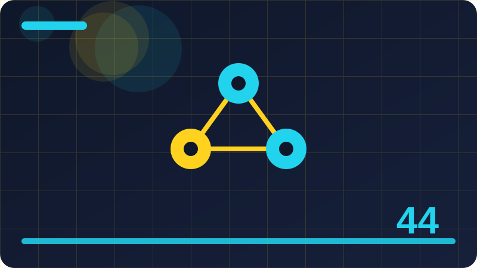

Chapter 44: Keeping Up with AI Without Hype

Section 1: Why AI News Feels So Fast
It helps to begin why ai news feels so fast with a simple question: what would a careful person do here without any machine at all? Once that human step is clear, the machine step becomes much easier to judge, because you can ask whether the tool is genuinely helping that human step or only making it look faster. Keep that question in mind as you read, and use it again at the end of the section.
One key idea about why ai news feels so fast is this: AI news feels fast because announcements, demos, rumours, and opinions all arrive through the same feed, at the same speed, with the same urgency. Notice how this point connects to the sections around it. Ideas in this book build on each other, and a point that seems small here often becomes the key to a harder problem later.
One key idea about why ai news feels so fast is this: the feeling of speed is partly real, since the field does move quickly, and partly manufactured, since feeds are designed to keep you scrolling. If you ever feel unsure about this point, return to a concrete example rather than an abstract argument. One real, small, local example usually clears up more confusion than ten general claims.
One key idea about why ai news feels so fast is this: separating real movement from manufactured urgency is the first skill of keeping up, and it begins with slowing down on purpose. Notice how this point connects to the sections around it. Ideas in this book build on each other, and a point that seems small here often becomes the key to a harder problem later.
The small program below lets you try a toy version of this idea on your own machine, using only the Python standard library and your own words. Run it, read the output, then change one list item or one value and run it again, so you can see exactly what each part contributes to the result.
Remember that the tool is only one part of the process, and usually not the most important part. Your goal, your audience, your taste, and your checking matter more than the speed of any generator. When you keep those human parts in charge, the tool becomes a genuine helper. When you hand them over, the tool starts making decisions you should be making yourself.
You do not need to master everything in this section today. Pick the one idea that felt most useful, try it in a tiny example of your own, and keep the rest as a map for later. Learning works best in layers: a first pass for the shape of the idea, a second pass when you actually need it, and real practice in between. A headline is an invitation to check, not a conclusion to repeat, and the few minutes you spend checking save hours of acting on a false claim.
# A tiny news filter: keep only headlines about topics you chose.
headlines = ["New local model runs offline", "Celebrity gossip roundup",
"Small tool sorts notes faster", "Sports results today"]
topics = ["model", "tool"]
for headline in headlines:
if any(topic in headline.lower() for topic in topics):
print("Keep:", headline)Check: What did the code example in this section teach you about why ai news feels so fast that the words alone did not?
Section 2: News, Announcements and Rumours Are Different
This section is about news, announcements and rumours are different. You do not need any special background to follow it, because we will build the idea one small step at a time, in plain words, and connect every new point to something you already understand from everyday life. The aim is not to memorise a definition. The aim is to end the section able to explain the idea to a friend, to spot it in a real tool, and to use it sensibly in your own small projects.
One key idea about news, announcements and rumours are different is this: news reports something that happened, an announcement claims something a company wants you to believe, and a rumour repeats something unverified. That matters because it changes what you should do next, not just what you believe. When you can name the effect, you can plan around it instead of being surprised by it.
One key idea about news, announcements and rumours are different is this: treating all three as news is a common mistake, because each deserves a different level of trust and a different kind of checking. That matters because it changes what you should do next, not just what you believe. When you can name the effect, you can plan around it instead of being surprised by it.
One key idea about news, announcements and rumours are different is this: label what you are reading as soon as you open it, and your trust will automatically adjust to the right level. A beginner who understands this point will make better choices than an expert who ignores it, because most mistakes here come from rushing, not from lack of talent.
The small program below lets you try a toy version of this idea on your own machine, using only the Python standard library and your own words. Run it, read the output, then change one list item or one value and run it again, so you can see exactly what each part contributes to the result.
Watch out for the easy trap of accepting the first result because it looks polished. A smooth sentence is not the same as a true sentence, and a pretty picture is not the same as a good design. Pause before you keep anything, and ask whether it fits your purpose, whether it says what you meant, and whether you could defend every part of it if someone asked you about it tomorrow.
As you finish this section, ask yourself one honest question: could you explain this idea without the tool in front of you? If the answer is yes, you have genuinely learned something. If the answer is not yet, that is fine too: reread the example, run the code once more, and try the Check question in your own words before moving on. Keep a small list of sources that have earned your trust over months, and let new sources earn their place the same slow way.
import datetime
# A simple reading log: date, source, and one line you learned.
log = [("2026-10-31", "course notes", "spacing beats rereading")]
for date, source, learned in log:
print(date, "|", source, "|", learned)Check: In your own words, what is the main idea of this section about news, announcements and rumours are different, and where could you use it?
Section 3: Headlines Are Written to Be Clicked
When people talk about headlines are written to be clicked, they often jump straight to the most exciting claim and skip the quiet middle part where the real understanding lives. This section stays in that middle part on purpose. We will look at what is actually happening, what is not happening, and what a careful beginner should do next, using only plain language and a small program you can run on your own machine.
One key idea about headlines are written to be clicked is this: a headline's job, in many feeds, is to earn a click, not to summarise fairly, so it often promises more than the article delivers. That matters because it changes what you should do next, not just what you believe. When you can name the effect, you can plan around it instead of being surprised by it.
One key idea about headlines are written to be clicked is this: reading past the headline into the first paragraphs usually reveals the qualifiers the headline removed, such as may, early, or in tests. Notice how this point connects to the sections around it. Ideas in this book build on each other, and a point that seems small here often becomes the key to a harder problem later.
One key idea about headlines are written to be clicked is this: make it a rule to never share or act on a headline alone, and you will already be calmer and better informed than most readers. Try it with a tiny example of your own before you trust it on a bigger task. Small tests reveal big misunderstandings cheaply, and that cheap lesson is one of the best gifts of working locally.
The small program below lets you try a toy version of this idea on your own machine, using only the Python standard library and your own words. Run it, read the output, then change one list item or one value and run it again, so you can see exactly what each part contributes to the result.
Remember that the tool is only one part of the process, and usually not the most important part. Your goal, your audience, your taste, and your checking matter more than the speed of any generator. When you keep those human parts in charge, the tool becomes a genuine helper. When you hand them over, the tool starts making decisions you should be making yourself.
Keep this section as a reference, not a rulebook. Different projects will need different choices, and part of growing skill is learning when to follow a guideline and when to adapt it with good reason. What should not change is the core habit: know what you asked for, look carefully at what you got, and take responsibility for what you keep. When everyone repeats the same story in the same words, that usually means one source was copied many times, not that many sources confirmed it. Your attention is the budget that matters most: spend it on learning and building, and spend very little of it on outrage, gossip, or prediction.
def is_hype(text):
hype_words = ["revolutionary", "everyone must", "changes everything", "miracle"]
found = [w for w in hype_words if w in text.lower()]
return found
print(is_hype("A revolutionary tool that changes everything!"))Check: What is one mistake a beginner often makes with headlines are written to be clicked, and how would you avoid it?
Section 4: The Demo Trap
It helps to begin the demo trap with a simple question: what would a careful person do here without any machine at all? Once that human step is clear, the machine step becomes much easier to judge, because you can ask whether the tool is genuinely helping that human step or only making it look faster. Keep that question in mind as you read, and use it again at the end of the section.
One key idea about the demo trap is this: a demo shows a tool at its best, on a prepared example, often with help, editing, or retries that the audience never sees. In practice, this is the difference between using a tool well and being used by it. The careful user notices the effect early, while the careless user only notices it after the work is already shared.
One key idea about the demo trap is this: the trap is assuming the demo is the everyday experience, when everyday use includes errors, edge cases, and ordinary, unprepared inputs. In practice, this is the difference between using a tool well and being used by it. The careful user notices the effect early, while the careless user only notices it after the work is already shared.
One key idea about the demo trap is this: ask what the demo did not show: the failures, the setup, the cost, and the time, because those missing parts are the real product. Try it with a tiny example of your own before you trust it on a bigger task. Small tests reveal big misunderstandings cheaply, and that cheap lesson is one of the best gifts of working locally.
The small program below lets you try a toy version of this idea on your own machine, using only the Python standard library and your own words. Run it, read the output, then change one list item or one value and run it again, so you can see exactly what each part contributes to the result.
Watch out for the easy trap of accepting the first result because it looks polished. A smooth sentence is not the same as a true sentence, and a pretty picture is not the same as a good design. Pause before you keep anything, and ask whether it fits your purpose, whether it says what you meant, and whether you could defend every part of it if someone asked you about it tomorrow.
Before you move on, try the small code example in this section on your own machine, change one value, and run it again. Notice what stays the same and what changes, and write one sentence about what you learned. That single sentence is worth more than reading the section twice, because it proves the idea in your own words. Your attention is the budget that matters most: spend it on learning and building, and spend very little of it on outrage, gossip, or prediction. A weekly review beats daily panic, because a week of news reveals which stories mattered and which ones merely shouted the loudest.
# Counting claims: how many strong claims does a post actually make?
post = "This will replace all jobs and end all problems forever."
strong = ["replace all", "end all", "forever", "everyone"]
print("Strong claims:", sum(1 for s in strong if s in post))Check: What did the code example in this section teach you about the demo trap that the words alone did not?
Section 5: Benchmarks in Plain Words
This section is about benchmarks in plain words. You do not need any special background to follow it, because we will build the idea one small step at a time, in plain words, and connect every new point to something you already understand from everyday life. The aim is not to memorise a definition. The aim is to end the section able to explain the idea to a friend, to spot it in a real tool, and to use it sensibly in your own small projects.
One key idea about benchmarks in plain words is this: a benchmark is a fixed test used to score a model, and it is useful only when the test matches the job you actually care about. Try it with a tiny example of your own before you trust it on a bigger task. Small tests reveal big misunderstandings cheaply, and that cheap lesson is one of the best gifts of working locally.
One key idea about benchmarks in plain words is this: benchmarks can be gamed, leaked into training, or chosen to flatter one model, so a single high score proves far less than it appears to. Notice how this point connects to the sections around it. Ideas in this book build on each other, and a point that seems small here often becomes the key to a harder problem later.
One key idea about benchmarks in plain words is this: look for several benchmarks, for who ran them, and for results on tasks like yours, before you let a score change your plans. In practice, this is the difference between using a tool well and being used by it. The careful user notices the effect early, while the careless user only notices it after the work is already shared.
The small program below lets you try a toy version of this idea on your own machine, using only the Python standard library and your own words. Run it, read the output, then change one list item or one value and run it again, so you can see exactly what each part contributes to the result.
Remember that the tool is only one part of the process, and usually not the most important part. Your goal, your audience, your taste, and your checking matter more than the speed of any generator. When you keep those human parts in charge, the tool becomes a genuine helper. When you hand them over, the tool starts making decisions you should be making yourself.
The main point to carry forward is a simple one: stay the person who decides. Use the tool to widen your choices, to draft faster, or to test an idea, and then bring your own judgment back to the centre. Tools change quickly, but that habit of deciding, checking, and owning the result will serve you in every tool you meet next. A weekly review beats daily panic, because a week of news reveals which stories mattered and which ones merely shouted the loudest.
import collections
# Your own weekly topic counts: what did you actually read about?
topics = ["local models", "study tools", "local models", "privacy"]
print(collections.Counter(topics))Check: In your own words, what is the main idea of this section about benchmarks in plain words, and where could you use it?
Section 6: One Study Is Not a Revolution
When people talk about one study is not a revolution, they often jump straight to the most exciting claim and skip the quiet middle part where the real understanding lives. This section stays in that middle part on purpose. We will look at what is actually happening, what is not happening, and what a careful beginner should do next, using only plain language and a small program you can run on your own machine.
One key idea about one study is not a revolution is this: a single study, however exciting, is one piece of evidence, and science advances when results are repeated by independent teams. In practice, this is the difference between using a tool well and being used by it. The careful user notices the effect early, while the careless user only notices it after the work is already shared.
One key idea about one study is not a revolution is this: early studies often use small samples, special conditions, or measures that do not match real life, and later work frequently softens their claims. If you ever feel unsure about this point, return to a concrete example rather than an abstract argument. One real, small, local example usually clears up more confusion than ten general claims.
One key idea about one study is not a revolution is this: wait for replication and for plain-language summaries from careful sources before you treat a study as settled knowledge. That matters because it changes what you should do next, not just what you believe. When you can name the effect, you can plan around it instead of being surprised by it.
The small program below lets you try a toy version of this idea on your own machine, using only the Python standard library and your own words. Run it, read the output, then change one list item or one value and run it again, so you can see exactly what each part contributes to the result.
Watch out for the easy trap of accepting the first result because it looks polished. A smooth sentence is not the same as a true sentence, and a pretty picture is not the same as a good design. Pause before you keep anything, and ask whether it fits your purpose, whether it says what you meant, and whether you could defend every part of it if someone asked you about it tomorrow.
If one idea from this section sticks, let it be this: slow, honest checking beats fast, careless output every time. Speed feels impressive in the moment, but checked work is the work people trust, reuse, and remember. Build the checking habit now, while your projects are small, and it will already be strong when your projects grow. Write down predictions you hear, with dates, and revisit them later, because a forecaster's record is the fairest test of their next forecast. If a claim would change your plans, it deserves a second source and a primary document, while a claim that changes nothing deserves only a glance.
def summarise_in_one_line(text):
sentence = text.split(".")[0].strip()
return sentence + "."
print(summarise_in_one_line("A new small model runs offline. It is faster than the old one. Details follow."))Check: What is one mistake a beginner often makes with one study is not a revolution, and how would you avoid it?
Section 7: Experts Disagree, and That Is Normal
It helps to begin experts disagree, and that is normal with a simple question: what would a careful person do here without any machine at all? Once that human step is clear, the machine step becomes much easier to judge, because you can ask whether the tool is genuinely helping that human step or only making it look faster. Keep that question in mind as you read, and use it again at the end of the section.
One key idea about experts disagree, and that is normal is this: experts disagree about AI because the field is young, the evidence is incomplete, and different experts weigh risks and benefits differently. If you ever feel unsure about this point, return to a concrete example rather than an abstract argument. One real, small, local example usually clears up more confusion than ten general claims.
One key idea about experts disagree, and that is normal is this: disagreement is not a sign that nobody knows anything: it is a sign that the honest answer is still forming, and that certainty would be false. Notice how this point connects to the sections around it. Ideas in this book build on each other, and a point that seems small here often becomes the key to a harder problem later.
One key idea about experts disagree, and that is normal is this: listen for the reasons behind each position, not only the conclusion, because reasons are what let you judge for yourself. Notice how this point connects to the sections around it. Ideas in this book build on each other, and a point that seems small here often becomes the key to a harder problem later.
The small program below lets you try a toy version of this idea on your own machine, using only the Python standard library and your own words. Run it, read the output, then change one list item or one value and run it again, so you can see exactly what each part contributes to the result.
Remember that the tool is only one part of the process, and usually not the most important part. Your goal, your audience, your taste, and your checking matter more than the speed of any generator. When you keep those human parts in charge, the tool becomes a genuine helper. When you hand them over, the tool starts making decisions you should be making yourself.
You do not need to master everything in this section today. Pick the one idea that felt most useful, try it in a tiny example of your own, and keep the rest as a map for later. Learning works best in layers: a first pass for the shape of the idea, a second pass when you actually need it, and real practice in between. If a claim would change your plans, it deserves a second source and a primary document, while a claim that changes nothing deserves only a glance.
# A checklist scorer for a news item: evidence earns points, hype loses them.
def score_item(has_source, has_numbers, has_hype_words):
score = 0
if has_source: score += 2
if has_numbers: score += 1
if has_hype_words: score -= 2
return score
print(score_item(True, True, False))Check: What did the code example in this section teach you about experts disagree, and that is normal that the words alone did not?
Section 8: Forecasts and Predictions: A Healthy Scepticism
This section is about forecasts and predictions: a healthy scepticism. You do not need any special background to follow it, because we will build the idea one small step at a time, in plain words, and connect every new point to something you already understand from everyday life. The aim is not to memorise a definition. The aim is to end the section able to explain the idea to a friend, to spot it in a real tool, and to use it sensibly in your own small projects.
One key idea about forecasts and predictions: a healthy scepticism is this: forecasts about AI often fail, because they assume the future will extend the present trend in a straight line, which it rarely does. That matters because it changes what you should do next, not just what you believe. When you can name the effect, you can plan around it instead of being surprised by it.
One key idea about forecasts and predictions: a healthy scepticism is this: a healthy response is to note the forecast, note its date, and check it later, instead of reshaping your life around it today. A beginner who understands this point will make better choices than an expert who ignores it, because most mistakes here come from rushing, not from lack of talent.
One key idea about forecasts and predictions: a healthy scepticism is this: the forecasters worth following are the ones who show their reasoning, admit past misses, and give ranges instead of exact dates. A beginner who understands this point will make better choices than an expert who ignores it, because most mistakes here come from rushing, not from lack of talent.
The small program below lets you try a toy version of this idea on your own machine, using only the Python standard library and your own words. Run it, read the output, then change one list item or one value and run it again, so you can see exactly what each part contributes to the result.
Watch out for the easy trap of accepting the first result because it looks polished. A smooth sentence is not the same as a true sentence, and a pretty picture is not the same as a good design. Pause before you keep anything, and ask whether it fits your purpose, whether it says what you meant, and whether you could defend every part of it if someone asked you about it tomorrow.
As you finish this section, ask yourself one honest question: could you explain this idea without the tool in front of you? If the answer is yes, you have genuinely learned something. If the answer is not yet, that is fine too: reread the example, run the code once more, and try the Check question in your own words before moving on. Learning in public, slowly and honestly, builds more lasting reputation than racing to repeat every announcement on the day it appears.
import re
# Finding dates in a headline, so you can tell news from old news.
headline = "Big model announced on 2026-10-28, says report"
print(re.findall(r"20\d\d-\d\d-\d\d", headline))Check: In your own words, what is the main idea of this section about forecasts and predictions: a healthy scepticism, and where could you use it?
Section 9: Hype Words to Watch For
When people talk about hype words to watch for, they often jump straight to the most exciting claim and skip the quiet middle part where the real understanding lives. This section stays in that middle part on purpose. We will look at what is actually happening, what is not happening, and what a careful beginner should do next, using only plain language and a small program you can run on your own machine.
One key idea about hype words to watch for is this: hype words include revolutionary, miraculous, changes everything, everyone must, and the end of, and they usually signal persuasion, not information. In practice, this is the difference between using a tool well and being used by it. The careful user notices the effect early, while the careless user only notices it after the work is already shared.
One key idea about hype words to watch for is this: when you spot hype words, slow down and look for the concrete claim underneath: what exactly was built, tested, and measured. Notice how this point connects to the sections around it. Ideas in this book build on each other, and a point that seems small here often becomes the key to a harder problem later.
One key idea about hype words to watch for is this: if no concrete claim survives removing the hype words, there was nothing solid to act on in the first place. A beginner who understands this point will make better choices than an expert who ignores it, because most mistakes here come from rushing, not from lack of talent.
The small program below lets you try a toy version of this idea on your own machine, using only the Python standard library and your own words. Run it, read the output, then change one list item or one value and run it again, so you can see exactly what each part contributes to the result.
Remember that the tool is only one part of the process, and usually not the most important part. Your goal, your audience, your taste, and your checking matter more than the speed of any generator. When you keep those human parts in charge, the tool becomes a genuine helper. When you hand them over, the tool starts making decisions you should be making yourself.
Keep this section as a reference, not a rulebook. Different projects will need different choices, and part of growing skill is learning when to follow a guideline and when to adapt it with good reason. What should not change is the core habit: know what you asked for, look carefully at what you got, and take responsibility for what you keep. The most useful question about any AI story is often the most boring one: what can I actually do differently because I know this today. Ignore advice that demands urgency without evidence, because genuine opportunities rarely expire in an hour, while scams almost always claim they do.
def same_story(a, b):
words_a = set(a.lower().split())
words_b = set(b.lower().split())
return len(words_a & words_b)
print(same_story("local model runs offline", "offline local model released"))Check: What is one mistake a beginner often makes with hype words to watch for, and how would you avoid it?
Section 10: Fear Headlines and Hope Headlines
It helps to begin fear headlines and hope headlines with a simple question: what would a careful person do here without any machine at all? Once that human step is clear, the machine step becomes much easier to judge, because you can ask whether the tool is genuinely helping that human step or only making it look faster. Keep that question in mind as you read, and use it again at the end of the section.
One key idea about fear headlines and hope headlines is this: fear headlines warn that AI will end jobs, skills, or safety, while hope headlines promise that it will solve everything, and both sell attention. In practice, this is the difference between using a tool well and being used by it. The careful user notices the effect early, while the careless user only notices it after the work is already shared.
One key idea about fear headlines and hope headlines is this: reality usually sits between the two: real changes, real limits, real costs, and real opportunities, all arriving unevenly. If you ever feel unsure about this point, return to a concrete example rather than an abstract argument. One real, small, local example usually clears up more confusion than ten general claims.
One key idea about fear headlines and hope headlines is this: a balanced reader asks what changes for whom, by how much, and by when, because those specifics dissolve both panic and fantasy. In practice, this is the difference between using a tool well and being used by it. The careful user notices the effect early, while the careless user only notices it after the work is already shared.
The small program below lets you try a toy version of this idea on your own machine, using only the Python standard library and your own words. Run it, read the output, then change one list item or one value and run it again, so you can see exactly what each part contributes to the result.
Watch out for the easy trap of accepting the first result because it looks polished. A smooth sentence is not the same as a true sentence, and a pretty picture is not the same as a good design. Pause before you keep anything, and ask whether it fits your purpose, whether it says what you meant, and whether you could defend every part of it if someone asked you about it tomorrow.
Before you move on, try the small code example in this section on your own machine, change one value, and run it again. Notice what stays the same and what changes, and write one sentence about what you learned. That single sentence is worth more than reading the section twice, because it proves the idea in your own words. Ignore advice that demands urgency without evidence, because genuine opportunities rarely expire in an hour, while scams almost always claim they do. A quiet week without AI news is not falling behind: it is often the week when real building, studying, and practising finally happen.
# A tiny digest: one useful line per source, nothing copied wholesale.
sources = [("notes", "spacing beats rereading"), ("guide", "test on your own examples")]
for name, line in sources:
print(name + ":", line)Check: What did the code example in this section teach you about fear headlines and hope headlines that the words alone did not?
Section 11: Who Benefits From the Hype
This section is about who benefits from the hype. You do not need any special background to follow it, because we will build the idea one small step at a time, in plain words, and connect every new point to something you already understand from everyday life. The aim is not to memorise a definition. The aim is to end the section able to explain the idea to a friend, to spot it in a real tool, and to use it sensibly in your own small projects.
One key idea about who benefits from the hype is this: hype benefits sellers of tools, courses, and attention, because excitement converts into clicks, sign-ups, and sales faster than careful evidence does. Try it with a tiny example of your own before you trust it on a bigger task. Small tests reveal big misunderstandings cheaply, and that cheap lesson is one of the best gifts of working locally.
One key idea about who benefits from the hype is this: that does not make every excited claim false, but it does mean excitement is not evidence, and the seller's interest is part of the context. In practice, this is the difference between using a tool well and being used by it. The careful user notices the effect early, while the careless user only notices it after the work is already shared.
One key idea about who benefits from the hype is this: ask who gains if you believe and act quickly, and let that answer set how carefully you check before you act. Try it with a tiny example of your own before you trust it on a bigger task. Small tests reveal big misunderstandings cheaply, and that cheap lesson is one of the best gifts of working locally.
The small program below lets you try a toy version of this idea on your own machine, using only the Python standard library and your own words. Run it, read the output, then change one list item or one value and run it again, so you can see exactly what each part contributes to the result.
Remember that the tool is only one part of the process, and usually not the most important part. Your goal, your audience, your taste, and your checking matter more than the speed of any generator. When you keep those human parts in charge, the tool becomes a genuine helper. When you hand them over, the tool starts making decisions you should be making yourself.
The main point to carry forward is a simple one: stay the person who decides. Use the tool to widen your choices, to draft faster, or to test an idea, and then bring your own judgment back to the centre. Tools change quickly, but that habit of deciding, checking, and owning the result will serve you in every tool you meet next. A quiet week without AI news is not falling behind: it is often the week when real building, studying, and practising finally happen.
# A tiny news filter: keep only headlines about topics you chose.
headlines = ["New local model runs offline", "Celebrity gossip roundup",
"Small tool sorts notes faster", "Sports results today"]
topics = ["model", "tool"]
for headline in headlines:
if any(topic in headline.lower() for topic in topics):
print("Keep:", headline)Check: In your own words, what is the main idea of this section about who benefits from the hype, and where could you use it?
Section 12: Primary Sources in Plain Words
When people talk about primary sources in plain words, they often jump straight to the most exciting claim and skip the quiet middle part where the real understanding lives. This section stays in that middle part on purpose. We will look at what is actually happening, what is not happening, and what a careful beginner should do next, using only plain language and a small program you can run on your own machine.
One key idea about primary sources in plain words is this: a primary source is the original document: the paper, the announcement, the code, or the data, rather than someone's summary of it. Notice how this point connects to the sections around it. Ideas in this book build on each other, and a point that seems small here often becomes the key to a harder problem later.
One key idea about primary sources in plain words is this: checking a primary source, even briefly, often corrects a summary, because summaries drop qualifiers, context, and limits. Notice how this point connects to the sections around it. Ideas in this book build on each other, and a point that seems small here often becomes the key to a harder problem later.
One key idea about primary sources in plain words is this: you do not need to read every primary source fully: reading its summary, its limits, and its conclusions is usually enough to judge it. A beginner who understands this point will make better choices than an expert who ignores it, because most mistakes here come from rushing, not from lack of talent.
The small program below lets you try a toy version of this idea on your own machine, using only the Python standard library and your own words. Run it, read the output, then change one list item or one value and run it again, so you can see exactly what each part contributes to the result.
Watch out for the easy trap of accepting the first result because it looks polished. A smooth sentence is not the same as a true sentence, and a pretty picture is not the same as a good design. Pause before you keep anything, and ask whether it fits your purpose, whether it says what you meant, and whether you could defend every part of it if someone asked you about it tomorrow.
If one idea from this section sticks, let it be this: slow, honest checking beats fast, careless output every time. Speed feels impressive in the moment, but checked work is the work people trust, reuse, and remember. Build the checking habit now, while your projects are small, and it will already be strong when your projects grow. Compare a new announcement with what you already know how to do, and you will often find your current tools already cover the supposed revolution. Keep your notes, your test results, and your project log close, because they are the anchor that keeps hype from dragging your plans around.
import datetime
# A simple reading log: date, source, and one line you learned.
log = [("2026-10-31", "course notes", "spacing beats rereading")]
for date, source, learned in log:
print(date, "|", source, "|", learned)Check: What is one mistake a beginner often makes with primary sources in plain words, and how would you avoid it?
Section 13: How to Check a Story in Ten Minutes
It helps to begin how to check a story in ten minutes with a simple question: what would a careful person do here without any machine at all? Once that human step is clear, the machine step becomes much easier to judge, because you can ask whether the tool is genuinely helping that human step or only making it look faster. Keep that question in mind as you read, and use it again at the end of the section.
One key idea about how to check a story in ten minutes is this: a ten-minute check has four steps: find the original source, read past the headline, look for a second independent report, and note what is still unknown. That matters because it changes what you should do next, not just what you believe. When you can name the effect, you can plan around it instead of being surprised by it.
One key idea about how to check a story in ten minutes is this: if any step fails, the honest conclusion is not yet verified, and the right action is to wait, not to share or to decide. That matters because it changes what you should do next, not just what you believe. When you can name the effect, you can plan around it instead of being surprised by it.
One key idea about how to check a story in ten minutes is this: practise the ten-minute check on small stories first, so it becomes a fast habit before a big story demands it. If you ever feel unsure about this point, return to a concrete example rather than an abstract argument. One real, small, local example usually clears up more confusion than ten general claims.
The small program below lets you try a toy version of this idea on your own machine, using only the Python standard library and your own words. Run it, read the output, then change one list item or one value and run it again, so you can see exactly what each part contributes to the result.
Remember that the tool is only one part of the process, and usually not the most important part. Your goal, your audience, your taste, and your checking matter more than the speed of any generator. When you keep those human parts in charge, the tool becomes a genuine helper. When you hand them over, the tool starts making decisions you should be making yourself.
You do not need to master everything in this section today. Pick the one idea that felt most useful, try it in a tiny example of your own, and keep the rest as a map for later. Learning works best in layers: a first pass for the shape of the idea, a second pass when you actually need it, and real practice in between. Keep your notes, your test results, and your project log close, because they are the anchor that keeps hype from dragging your plans around.
def is_hype(text):
hype_words = ["revolutionary", "everyone must", "changes everything", "miracle"]
found = [w for w in hype_words if w in text.lower()]
return found
print(is_hype("A revolutionary tool that changes everything!"))Check: What did the code example in this section teach you about how to check a story in ten minutes that the words alone did not?
Section 14: Second Sources and Independent Confirmation
This section is about second sources and independent confirmation. You do not need any special background to follow it, because we will build the idea one small step at a time, in plain words, and connect every new point to something you already understand from everyday life. The aim is not to memorise a definition. The aim is to end the section able to explain the idea to a friend, to spot it in a real tool, and to use it sensibly in your own small projects.
One key idea about second sources and independent confirmation is this: a second source only confirms a story if it is genuinely independent, with its own reporting, rather than a copy of the first source. That matters because it changes what you should do next, not just what you believe. When you can name the effect, you can plan around it instead of being surprised by it.
One key idea about second sources and independent confirmation is this: many feeds repeat one wire report in dozens of versions, creating the illusion of confirmation where only repetition exists. That matters because it changes what you should do next, not just what you believe. When you can name the effect, you can plan around it instead of being surprised by it.
One key idea about second sources and independent confirmation is this: trace a story back to its origin when it matters, and count origins, not copies, when you judge how well confirmed it is. That matters because it changes what you should do next, not just what you believe. When you can name the effect, you can plan around it instead of being surprised by it.
The small program below lets you try a toy version of this idea on your own machine, using only the Python standard library and your own words. Run it, read the output, then change one list item or one value and run it again, so you can see exactly what each part contributes to the result.
Watch out for the easy trap of accepting the first result because it looks polished. A smooth sentence is not the same as a true sentence, and a pretty picture is not the same as a good design. Pause before you keep anything, and ask whether it fits your purpose, whether it says what you meant, and whether you could defend every part of it if someone asked you about it tomorrow.
As you finish this section, ask yourself one honest question: could you explain this idea without the tool in front of you? If the answer is yes, you have genuinely learned something. If the answer is not yet, that is fine too: reread the example, run the code once more, and try the Check question in your own words before moving on. Reading one careful explanation fully beats skimming twenty headlines, and the depth shows up later in the quality of your own work.
# Counting claims: how many strong claims does a post actually make?
post = "This will replace all jobs and end all problems forever."
strong = ["replace all", "end all", "forever", "everyone"]
print("Strong claims:", sum(1 for s in strong if s in post))Check: In your own words, what is the main idea of this section about second sources and independent confirmation, and where could you use it?
Section 15: Old News Wearing New Clothes
When people talk about old news wearing new clothes, they often jump straight to the most exciting claim and skip the quiet middle part where the real understanding lives. This section stays in that middle part on purpose. We will look at what is actually happening, what is not happening, and what a careful beginner should do next, using only plain language and a small program you can run on your own machine.
One key idea about old news wearing new clothes is this: old news often returns as if it were new, because an old demo, an old paper, or an old claim gets reposted without its original date. Try it with a tiny example of your own before you trust it on a bigger task. Small tests reveal big misunderstandings cheaply, and that cheap lesson is one of the best gifts of working locally.
One key idea about old news wearing new clothes is this: checking the date is a thirty-second defence that kills a surprising number of viral stories, which turn out to be years old. Notice how this point connects to the sections around it. Ideas in this book build on each other, and a point that seems small here often becomes the key to a harder problem later.
One key idea about old news wearing new clothes is this: when a story feels familiar, search for its earliest version before you react, because familiarity is often a clue, not a coincidence. Notice how this point connects to the sections around it. Ideas in this book build on each other, and a point that seems small here often becomes the key to a harder problem later.
The small program below lets you try a toy version of this idea on your own machine, using only the Python standard library and your own words. Run it, read the output, then change one list item or one value and run it again, so you can see exactly what each part contributes to the result.
Remember that the tool is only one part of the process, and usually not the most important part. Your goal, your audience, your taste, and your checking matter more than the speed of any generator. When you keep those human parts in charge, the tool becomes a genuine helper. When you hand them over, the tool starts making decisions you should be making yourself.
Keep this section as a reference, not a rulebook. Different projects will need different choices, and part of growing skill is learning when to follow a guideline and when to adapt it with good reason. What should not change is the core habit: know what you asked for, look carefully at what you got, and take responsibility for what you keep. Be kind to your past self when a prediction fails: the goal is better judgment over time, not perfect foresight on any single story. A source that admits uncertainty, shows its evidence, and corrects its mistakes is usually more trustworthy than one that never admits being wrong.
import collections
# Your own weekly topic counts: what did you actually read about?
topics = ["local models", "study tools", "local models", "privacy"]
print(collections.Counter(topics))Check: What is one mistake a beginner often makes with old news wearing new clothes, and how would you avoid it?
Section 16: Choosing a Few Sources You Trust
It helps to begin choosing a few sources you trust with a simple question: what would a careful person do here without any machine at all? Once that human step is clear, the machine step becomes much easier to judge, because you can ask whether the tool is genuinely helping that human step or only making it look faster. Keep that question in mind as you read, and use it again at the end of the section.
One key idea about choosing a few sources you trust is this: a few trusted sources beat a hundred random ones, because trust is built by a record of accuracy, corrections, and clear limits. In practice, this is the difference between using a tool well and being used by it. The careful user notices the effect early, while the careless user only notices it after the work is already shared.
One key idea about choosing a few sources you trust is this: choose sources across different viewpoints, so that no single perspective quietly becomes your whole picture of the field. Notice how this point connects to the sections around it. Ideas in this book build on each other, and a point that seems small here often becomes the key to a harder problem later.
One key idea about choosing a few sources you trust is this: review your source list twice a year, keep the ones that earned it, and drop the ones that repeatedly misled you, however entertaining they are. If you ever feel unsure about this point, return to a concrete example rather than an abstract argument. One real, small, local example usually clears up more confusion than ten general claims.
The small program below lets you try a toy version of this idea on your own machine, using only the Python standard library and your own words. Run it, read the output, then change one list item or one value and run it again, so you can see exactly what each part contributes to the result.
Watch out for the easy trap of accepting the first result because it looks polished. A smooth sentence is not the same as a true sentence, and a pretty picture is not the same as a good design. Pause before you keep anything, and ask whether it fits your purpose, whether it says what you meant, and whether you could defend every part of it if someone asked you about it tomorrow.
Before you move on, try the small code example in this section on your own machine, change one value, and run it again. Notice what stays the same and what changes, and write one sentence about what you learned. That single sentence is worth more than reading the section twice, because it proves the idea in your own words. A source that admits uncertainty, shows its evidence, and corrects its mistakes is usually more trustworthy than one that never admits being wrong.
def summarise_in_one_line(text):
sentence = text.split(".")[0].strip()
return sentence + "."
print(summarise_in_one_line("A new small model runs offline. It is faster than the old one. Details follow."))Check: What did the code example in this section teach you about choosing a few sources you trust that the words alone did not?
Section 17: Newsletters, Feeds and Algorithms
This section is about newsletters, feeds and algorithms. You do not need any special background to follow it, because we will build the idea one small step at a time, in plain words, and connect every new point to something you already understand from everyday life. The aim is not to memorise a definition. The aim is to end the section able to explain the idea to a friend, to spot it in a real tool, and to use it sensibly in your own small projects.
One key idea about newsletters, feeds and algorithms is this: newsletters you choose are calmer than feeds an algorithm chooses for you, because you set the topic, the pace, and the length. Try it with a tiny example of your own before you trust it on a bigger task. Small tests reveal big misunderstandings cheaply, and that cheap lesson is one of the best gifts of working locally.
One key idea about newsletters, feeds and algorithms is this: algorithmic feeds optimise for your attention, not your understanding, so they favour the loud, the new, and the extreme over the true and useful. In practice, this is the difference between using a tool well and being used by it. The careful user notices the effect early, while the careless user only notices it after the work is already shared.
One key idea about newsletters, feeds and algorithms is this: take control by choosing a small set of newsletters or feeds, checking them at set times, and leaving the endless scroll alone. Try it with a tiny example of your own before you trust it on a bigger task. Small tests reveal big misunderstandings cheaply, and that cheap lesson is one of the best gifts of working locally.
The small program below lets you try a toy version of this idea on your own machine, using only the Python standard library and your own words. Run it, read the output, then change one list item or one value and run it again, so you can see exactly what each part contributes to the result.
Remember that the tool is only one part of the process, and usually not the most important part. Your goal, your audience, your taste, and your checking matter more than the speed of any generator. When you keep those human parts in charge, the tool becomes a genuine helper. When you hand them over, the tool starts making decisions you should be making yourself.
The main point to carry forward is a simple one: stay the person who decides. Use the tool to widen your choices, to draft faster, or to test an idea, and then bring your own judgment back to the centre. Tools change quickly, but that habit of deciding, checking, and owning the result will serve you in every tool you meet next. Set a fixed time for news, and when the time ends, return to building, because the feed will still be there tomorrow and your project will not build itself.
# A checklist scorer for a news item: evidence earns points, hype loses them.
def score_item(has_source, has_numbers, has_hype_words):
score = 0
if has_source: score += 2
if has_numbers: score += 1
if has_hype_words: score -= 2
return score
print(score_item(True, True, False))Check: In your own words, what is the main idea of this section about newsletters, feeds and algorithms, and where could you use it?
Section 18: Setting a News Routine That Fits Your Life
When people talk about setting a news routine that fits your life, they often jump straight to the most exciting claim and skip the quiet middle part where the real understanding lives. This section stays in that middle part on purpose. We will look at what is actually happening, what is not happening, and what a careful beginner should do next, using only plain language and a small program you can run on your own machine.
One key idea about setting a news routine that fits your life is this: a news routine fits your life when it has a fixed time, a fixed length, and a fixed purpose, such as learning one useful thing per session. That matters because it changes what you should do next, not just what you believe. When you can name the effect, you can plan around it instead of being surprised by it.
One key idea about setting a news routine that fits your life is this: without a routine, news expands to fill every gap in the day, and the time it steals comes directly from building, studying, and resting. In practice, this is the difference between using a tool well and being used by it. The careful user notices the effect early, while the careless user only notices it after the work is already shared.
One key idea about setting a news routine that fits your life is this: start with twenty minutes, twice a week, and increase only if the extra time produces extra learning you can actually name. A beginner who understands this point will make better choices than an expert who ignores it, because most mistakes here come from rushing, not from lack of talent.
The small program below lets you try a toy version of this idea on your own machine, using only the Python standard library and your own words. Run it, read the output, then change one list item or one value and run it again, so you can see exactly what each part contributes to the result.
Watch out for the easy trap of accepting the first result because it looks polished. A smooth sentence is not the same as a true sentence, and a pretty picture is not the same as a good design. Pause before you keep anything, and ask whether it fits your purpose, whether it says what you meant, and whether you could defend every part of it if someone asked you about it tomorrow.
If one idea from this section sticks, let it be this: slow, honest checking beats fast, careless output every time. Speed feels impressive in the moment, but checked work is the work people trust, reuse, and remember. Build the checking habit now, while your projects are small, and it will already be strong when your projects grow. Share news only after you have checked it, and say what you checked, so your sharing adds signal instead of adding to the noise.
import re
# Finding dates in a headline, so you can tell news from old news.
headline = "Big model announced on 2026-10-28, says report"
print(re.findall(r"20\d\d-\d\d-\d\d", headline))Check: What is one mistake a beginner often makes with setting a news routine that fits your life, and how would you avoid it?
Section 19: A Weekly Review Instead of Daily Panic
It helps to begin a weekly review instead of daily panic with a simple question: what would a careful person do here without any machine at all? Once that human step is clear, the machine step becomes much easier to judge, because you can ask whether the tool is genuinely helping that human step or only making it look faster. Keep that question in mind as you read, and use it again at the end of the section.
One key idea about a weekly review instead of daily panic is this: a weekly review gathers the week's stories, keeps the ones that still matter, and quietly drops the ones that were only noise. A beginner who understands this point will make better choices than an expert who ignores it, because most mistakes here come from rushing, not from lack of talent.
One key idea about a weekly review instead of daily panic is this: the week's distance is a filter: stories that felt urgent on Monday often look trivial by Friday, and the survivors are the real developments. Try it with a tiny example of your own before you trust it on a bigger task. Small tests reveal big misunderstandings cheaply, and that cheap lesson is one of the best gifts of working locally.
One key idea about a weekly review instead of daily panic is this: write your weekly review in three lines: what happened, what it means for your work, and what, if anything, you will change. That matters because it changes what you should do next, not just what you believe. When you can name the effect, you can plan around it instead of being surprised by it.
The small program below lets you try a toy version of this idea on your own machine, using only the Python standard library and your own words. Run it, read the output, then change one list item or one value and run it again, so you can see exactly what each part contributes to the result.
Remember that the tool is only one part of the process, and usually not the most important part. Your goal, your audience, your taste, and your checking matter more than the speed of any generator. When you keep those human parts in charge, the tool becomes a genuine helper. When you hand them over, the tool starts making decisions you should be making yourself.
You do not need to master everything in this section today. Pick the one idea that felt most useful, try it in a tiny example of your own, and keep the rest as a map for later. Learning works best in layers: a first pass for the shape of the idea, a second pass when you actually need it, and real practice in between. Calm, steady learning compounds: a little verified knowledge each week becomes, over a year, a genuine understanding that hype can never fake. The news will not slow down for you, so your system must be calmer than the news, with fewer sources, clearer rules, and regular pauses.
def same_story(a, b):
words_a = set(a.lower().split())
words_b = set(b.lower().split())
return len(words_a & words_b)
print(same_story("local model runs offline", "offline local model released"))Check: What did the code example in this section teach you about a weekly review instead of daily panic that the words alone did not?
Section 20: Keeping a Learning Log
This section is about keeping a learning log. You do not need any special background to follow it, because we will build the idea one small step at a time, in plain words, and connect every new point to something you already understand from everyday life. The aim is not to memorise a definition. The aim is to end the section able to explain the idea to a friend, to spot it in a real tool, and to use it sensibly in your own small projects.
One key idea about keeping a learning log is this: a learning log is a dated list of what you learned, from which source, and in one sentence of your own words. That matters because it changes what you should do next, not just what you believe. When you can name the effect, you can plan around it instead of being surprised by it.
One key idea about keeping a learning log is this: the log's value grows over months, because it shows your progress, reveals your source habits, and lets you revisit ideas you half understood. That matters because it changes what you should do next, not just what you believe. When you can name the effect, you can plan around it instead of being surprised by it.
One key idea about keeping a learning log is this: keep entries short, or the log becomes a chore: date, source, and one honest sentence is enough to make it useful. If you ever feel unsure about this point, return to a concrete example rather than an abstract argument. One real, small, local example usually clears up more confusion than ten general claims.
The small program below lets you try a toy version of this idea on your own machine, using only the Python standard library and your own words. Run it, read the output, then change one list item or one value and run it again, so you can see exactly what each part contributes to the result.
Watch out for the easy trap of accepting the first result because it looks polished. A smooth sentence is not the same as a true sentence, and a pretty picture is not the same as a good design. Pause before you keep anything, and ask whether it fits your purpose, whether it says what you meant, and whether you could defend every part of it if someone asked you about it tomorrow.
As you finish this section, ask yourself one honest question: could you explain this idea without the tool in front of you? If the answer is yes, you have genuinely learned something. If the answer is not yet, that is fine too: reread the example, run the code once more, and try the Check question in your own words before moving on. The news will not slow down for you, so your system must be calmer than the news, with fewer sources, clearer rules, and regular pauses.
# A tiny digest: one useful line per source, nothing copied wholesale.
sources = [("notes", "spacing beats rereading"), ("guide", "test on your own examples")]
for name, line in sources:
print(name + ":", line)Check: In your own words, what is the main idea of this section about keeping a learning log, and where could you use it?
Section 21: From News to Knowledge: The Slower Path
When people talk about from news to knowledge: the slower path, they often jump straight to the most exciting claim and skip the quiet middle part where the real understanding lives. This section stays in that middle part on purpose. We will look at what is actually happening, what is not happening, and what a careful beginner should do next, using only plain language and a small program you can run on your own machine.
One key idea about from news to knowledge: the slower path is this: news becomes knowledge when you test it, connect it to what you already know, and use it in a real task, rather than merely reading it. If you ever feel unsure about this point, return to a concrete example rather than an abstract argument. One real, small, local example usually clears up more confusion than ten general claims.
One key idea about from news to knowledge: the slower path is this: the slower path includes reading a careful explanation, trying a small example, and writing a summary in your own words. If you ever feel unsure about this point, return to a concrete example rather than an abstract argument. One real, small, local example usually clears up more confusion than ten general claims.
One key idea about from news to knowledge: the slower path is this: knowledge built this way survives the next news cycle, while headlines fade within days, however exciting they felt at the time. Notice how this point connects to the sections around it. Ideas in this book build on each other, and a point that seems small here often becomes the key to a harder problem later.
The small program below lets you try a toy version of this idea on your own machine, using only the Python standard library and your own words. Run it, read the output, then change one list item or one value and run it again, so you can see exactly what each part contributes to the result.
Remember that the tool is only one part of the process, and usually not the most important part. Your goal, your audience, your taste, and your checking matter more than the speed of any generator. When you keep those human parts in charge, the tool becomes a genuine helper. When you hand them over, the tool starts making decisions you should be making yourself.
Keep this section as a reference, not a rulebook. Different projects will need different choices, and part of growing skill is learning when to follow a guideline and when to adapt it with good reason. What should not change is the core habit: know what you asked for, look carefully at what you got, and take responsibility for what you keep. A headline is an invitation to check, not a conclusion to repeat, and the few minutes you spend checking save hours of acting on a false claim. Keep a small list of sources that have earned your trust over months, and let new sources earn their place the same slow way.
# A tiny news filter: keep only headlines about topics you chose.
headlines = ["New local model runs offline", "Celebrity gossip roundup",
"Small tool sorts notes faster", "Sports results today"]
topics = ["model", "tool"]
for headline in headlines:
if any(topic in headline.lower() for topic in topics):
print("Keep:", headline)Check: What is one mistake a beginner often makes with from news to knowledge: the slower path, and how would you avoid it?
Section 22: Learning in Depth, Not in Headlines
It helps to begin learning in depth, not in headlines with a simple question: what would a careful person do here without any machine at all? Once that human step is clear, the machine step becomes much easier to judge, because you can ask whether the tool is genuinely helping that human step or only making it look faster. Keep that question in mind as you read, and use it again at the end of the section.
One key idea about learning in depth, not in headlines is this: depth means one topic, studied properly, with examples, practice, and checking, instead of twenty topics skimmed in a morning. If you ever feel unsure about this point, return to a concrete example rather than an abstract argument. One real, small, local example usually clears up more confusion than ten general claims.
One key idea about learning in depth, not in headlines is this: a deep understanding of one idea, such as how a local model works, serves you longer than a shallow acquaintance with fifty announcements. A beginner who understands this point will make better choices than an expert who ignores it, because most mistakes here come from rushing, not from lack of talent.
One key idea about learning in depth, not in headlines is this: choose one deep topic per month, study it properly, and let the headlines wait: they will still be there when you finish. That matters because it changes what you should do next, not just what you believe. When you can name the effect, you can plan around it instead of being surprised by it.
The small program below lets you try a toy version of this idea on your own machine, using only the Python standard library and your own words. Run it, read the output, then change one list item or one value and run it again, so you can see exactly what each part contributes to the result.
Watch out for the easy trap of accepting the first result because it looks polished. A smooth sentence is not the same as a true sentence, and a pretty picture is not the same as a good design. Pause before you keep anything, and ask whether it fits your purpose, whether it says what you meant, and whether you could defend every part of it if someone asked you about it tomorrow.
Before you move on, try the small code example in this section on your own machine, change one value, and run it again. Notice what stays the same and what changes, and write one sentence about what you learned. That single sentence is worth more than reading the section twice, because it proves the idea in your own words. Keep a small list of sources that have earned your trust over months, and let new sources earn their place the same slow way. When everyone repeats the same story in the same words, that usually means one source was copied many times, not that many sources confirmed it.
import datetime
# A simple reading log: date, source, and one line you learned.
log = [("2026-10-31", "course notes", "spacing beats rereading")]
for date, source, learned in log:
print(date, "|", source, "|", learned)Check: What did the code example in this section teach you about learning in depth, not in headlines that the words alone did not?
Section 23: Courses, Books and Documentation
This section is about courses, books and documentation. You do not need any special background to follow it, because we will build the idea one small step at a time, in plain words, and connect every new point to something you already understand from everyday life. The aim is not to memorise a definition. The aim is to end the section able to explain the idea to a friend, to spot it in a real tool, and to use it sensibly in your own small projects.
One key idea about courses, books and documentation is this: courses, books, and official documentation change slowly, which is a strength: they have been checked, organised, and tested by use. A beginner who understands this point will make better choices than an expert who ignores it, because most mistakes here come from rushing, not from lack of talent.
One key idea about courses, books and documentation is this: news tells you what changed this week, while a good book tells you what has stayed true for years, and both have a place in your learning. If you ever feel unsure about this point, return to a concrete example rather than an abstract argument. One real, small, local example usually clears up more confusion than ten general claims.
One key idea about courses, books and documentation is this: balance the two: let books and documentation build your foundation, and let news update it, rather than letting news become the foundation. Try it with a tiny example of your own before you trust it on a bigger task. Small tests reveal big misunderstandings cheaply, and that cheap lesson is one of the best gifts of working locally.
The small program below lets you try a toy version of this idea on your own machine, using only the Python standard library and your own words. Run it, read the output, then change one list item or one value and run it again, so you can see exactly what each part contributes to the result.
Remember that the tool is only one part of the process, and usually not the most important part. Your goal, your audience, your taste, and your checking matter more than the speed of any generator. When you keep those human parts in charge, the tool becomes a genuine helper. When you hand them over, the tool starts making decisions you should be making yourself.
The main point to carry forward is a simple one: stay the person who decides. Use the tool to widen your choices, to draft faster, or to test an idea, and then bring your own judgment back to the centre. Tools change quickly, but that habit of deciding, checking, and owning the result will serve you in every tool you meet next. When everyone repeats the same story in the same words, that usually means one source was copied many times, not that many sources confirmed it. Your attention is the budget that matters most: spend it on learning and building, and spend very little of it on outrage, gossip, or prediction.
def is_hype(text):
hype_words = ["revolutionary", "everyone must", "changes everything", "miracle"]
found = [w for w in hype_words if w in text.lower()]
return found
print(is_hype("A revolutionary tool that changes everything!"))Check: In your own words, what is the main idea of this section about courses, books and documentation, and where could you use it?
Section 24: Documentation as a Calm Source
When people talk about documentation as a calm source, they often jump straight to the most exciting claim and skip the quiet middle part where the real understanding lives. This section stays in that middle part on purpose. We will look at what is actually happening, what is not happening, and what a careful beginner should do next, using only plain language and a small program you can run on your own machine.
One key idea about documentation as a calm source is this: official documentation is written to help you use a tool correctly, so it is usually specific, practical, and free of sales language. That matters because it changes what you should do next, not just what you believe. When you can name the effect, you can plan around it instead of being surprised by it.
One key idea about documentation as a calm source is this: when news and documentation disagree, trust the documentation for how the tool works, and treat the news as a claim to verify. A beginner who understands this point will make better choices than an expert who ignores it, because most mistakes here come from rushing, not from lack of talent.
One key idea about documentation as a calm source is this: reading documentation for tools you actually use is one of the highest-return habits in this chapter, and it costs nothing but attention. Notice how this point connects to the sections around it. Ideas in this book build on each other, and a point that seems small here often becomes the key to a harder problem later.
The small program below lets you try a toy version of this idea on your own machine, using only the Python standard library and your own words. Run it, read the output, then change one list item or one value and run it again, so you can see exactly what each part contributes to the result.
Watch out for the easy trap of accepting the first result because it looks polished. A smooth sentence is not the same as a true sentence, and a pretty picture is not the same as a good design. Pause before you keep anything, and ask whether it fits your purpose, whether it says what you meant, and whether you could defend every part of it if someone asked you about it tomorrow.
If one idea from this section sticks, let it be this: slow, honest checking beats fast, careless output every time. Speed feels impressive in the moment, but checked work is the work people trust, reuse, and remember. Build the checking habit now, while your projects are small, and it will already be strong when your projects grow. Your attention is the budget that matters most: spend it on learning and building, and spend very little of it on outrage, gossip, or prediction. A weekly review beats daily panic, because a week of news reveals which stories mattered and which ones merely shouted the loudest.
# Counting claims: how many strong claims does a post actually make?
post = "This will replace all jobs and end all problems forever."
strong = ["replace all", "end all", "forever", "everyone"]
print("Strong claims:", sum(1 for s in strong if s in post))Check: What is one mistake a beginner often makes with documentation as a calm source, and how would you avoid it?
Section 25: Community Discussion: Signal and Noise
It helps to begin community discussion: signal and noise with a simple question: what would a careful person do here without any machine at all? Once that human step is clear, the machine step becomes much easier to judge, because you can ask whether the tool is genuinely helping that human step or only making it look faster. Keep that question in mind as you read, and use it again at the end of the section.
One key idea about community discussion: signal and noise is this: community discussion can surface real problems, clever tricks, and honest warnings faster than any official channel. Notice how this point connects to the sections around it. Ideas in this book build on each other, and a point that seems small here often becomes the key to a harder problem later.
One key idea about community discussion: signal and noise is this: it also carries rumour, boasting, and confident error, often from voices that sound expert but have never tested what they claim. A beginner who understands this point will make better choices than an expert who ignores it, because most mistakes here come from rushing, not from lack of talent.
One key idea about community discussion: signal and noise is this: treat discussion as a source of questions to test, not as a source of answers to trust, and test the interesting claims yourself. If you ever feel unsure about this point, return to a concrete example rather than an abstract argument. One real, small, local example usually clears up more confusion than ten general claims.
The small program below lets you try a toy version of this idea on your own machine, using only the Python standard library and your own words. Run it, read the output, then change one list item or one value and run it again, so you can see exactly what each part contributes to the result.
Remember that the tool is only one part of the process, and usually not the most important part. Your goal, your audience, your taste, and your checking matter more than the speed of any generator. When you keep those human parts in charge, the tool becomes a genuine helper. When you hand them over, the tool starts making decisions you should be making yourself.
You do not need to master everything in this section today. Pick the one idea that felt most useful, try it in a tiny example of your own, and keep the rest as a map for later. Learning works best in layers: a first pass for the shape of the idea, a second pass when you actually need it, and real practice in between. A weekly review beats daily panic, because a week of news reveals which stories mattered and which ones merely shouted the loudest. Write down predictions you hear, with dates, and revisit them later, because a forecaster's record is the fairest test of their next forecast.
import collections
# Your own weekly topic counts: what did you actually read about?
topics = ["local models", "study tools", "local models", "privacy"]
print(collections.Counter(topics))Check: What did the code example in this section teach you about community discussion: signal and noise that the words alone did not?
Section 26: Social Media and AI News
This section is about social media and ai news. You do not need any special background to follow it, because we will build the idea one small step at a time, in plain words, and connect every new point to something you already understand from everyday life. The aim is not to memorise a definition. The aim is to end the section able to explain the idea to a friend, to spot it in a real tool, and to use it sensibly in your own small projects.
One key idea about social media and ai news is this: social media rewards speed, confidence, and emotion, which are the opposite of the slow, careful, and qualified habits good learning needs. That matters because it changes what you should do next, not just what you believe. When you can name the effect, you can plan around it instead of being surprised by it.
One key idea about social media and ai news is this: a viral post about AI is evidence of virality, not of truth, and the most shared version of a story is often the least accurate. Notice how this point connects to the sections around it. Ideas in this book build on each other, and a point that seems small here often becomes the key to a harder problem later.
One key idea about social media and ai news is this: use social media for discovery if you enjoy it, but move every important claim to your ten-minute check before you believe or share it. A beginner who understands this point will make better choices than an expert who ignores it, because most mistakes here come from rushing, not from lack of talent.
The small program below lets you try a toy version of this idea on your own machine, using only the Python standard library and your own words. Run it, read the output, then change one list item or one value and run it again, so you can see exactly what each part contributes to the result.
Watch out for the easy trap of accepting the first result because it looks polished. A smooth sentence is not the same as a true sentence, and a pretty picture is not the same as a good design. Pause before you keep anything, and ask whether it fits your purpose, whether it says what you meant, and whether you could defend every part of it if someone asked you about it tomorrow.
As you finish this section, ask yourself one honest question: could you explain this idea without the tool in front of you? If the answer is yes, you have genuinely learned something. If the answer is not yet, that is fine too: reread the example, run the code once more, and try the Check question in your own words before moving on. Write down predictions you hear, with dates, and revisit them later, because a forecaster's record is the fairest test of their next forecast.
def summarise_in_one_line(text):
sentence = text.split(".")[0].strip()
return sentence + "."
print(summarise_in_one_line("A new small model runs offline. It is faster than the old one. Details follow."))Check: In your own words, what is the main idea of this section about social media and ai news, and where could you use it?
Section 27: When Everyone Agrees Too Quickly
When people talk about when everyone agrees too quickly, they often jump straight to the most exciting claim and skip the quiet middle part where the real understanding lives. This section stays in that middle part on purpose. We will look at what is actually happening, what is not happening, and what a careful beginner should do next, using only plain language and a small program you can run on your own machine.
One key idea about when everyone agrees too quickly is this: sudden unanimous agreement is suspicious, because real understanding usually arrives unevenly, with doubts, exceptions, and debate. In practice, this is the difference between using a tool well and being used by it. The careful user notices the effect early, while the careless user only notices it after the work is already shared.
One key idea about when everyone agrees too quickly is this: when every voice says the same thing on the same day, check whether they share one source, one interest, or one unexamined assumption. In practice, this is the difference between using a tool well and being used by it. The careful user notices the effect early, while the careless user only notices it after the work is already shared.
One key idea about when everyone agrees too quickly is this: a lone careful dissent is worth more than a hundred identical cheers, because it points at the question nobody has yet answered. Notice how this point connects to the sections around it. Ideas in this book build on each other, and a point that seems small here often becomes the key to a harder problem later.
The small program below lets you try a toy version of this idea on your own machine, using only the Python standard library and your own words. Run it, read the output, then change one list item or one value and run it again, so you can see exactly what each part contributes to the result.
Remember that the tool is only one part of the process, and usually not the most important part. Your goal, your audience, your taste, and your checking matter more than the speed of any generator. When you keep those human parts in charge, the tool becomes a genuine helper. When you hand them over, the tool starts making decisions you should be making yourself.
Keep this section as a reference, not a rulebook. Different projects will need different choices, and part of growing skill is learning when to follow a guideline and when to adapt it with good reason. What should not change is the core habit: know what you asked for, look carefully at what you got, and take responsibility for what you keep. If a claim would change your plans, it deserves a second source and a primary document, while a claim that changes nothing deserves only a glance. Learning in public, slowly and honestly, builds more lasting reputation than racing to repeat every announcement on the day it appears.
# A checklist scorer for a news item: evidence earns points, hype loses them.
def score_item(has_source, has_numbers, has_hype_words):
score = 0
if has_source: score += 2
if has_numbers: score += 1
if has_hype_words: score -= 2
return score
print(score_item(True, True, False))Check: What is one mistake a beginner often makes with when everyone agrees too quickly, and how would you avoid it?
Section 28: When to Ignore a Story Entirely
It helps to begin when to ignore a story entirely with a simple question: what would a careful person do here without any machine at all? Once that human step is clear, the machine step becomes much easier to judge, because you can ask whether the tool is genuinely helping that human step or only making it look faster. Keep that question in mind as you read, and use it again at the end of the section.
One key idea about when to ignore a story entirely is this: ignore a story when it has no source, no specifics, no effect on your work, and no way to check it, because it offers nothing but agitation. In practice, this is the difference between using a tool well and being used by it. The careful user notices the effect early, while the careless user only notices it after the work is already shared.
One key idea about when to ignore a story entirely is this: ignoring is not ignorance: it is a deliberate choice to spend attention where it produces learning, building, or real decisions. Notice how this point connects to the sections around it. Ideas in this book build on each other, and a point that seems small here often becomes the key to a harder problem later.
One key idea about when to ignore a story entirely is this: keep an ignore list beside your source list, and add to it every source that repeatedly wastes your time with unverifiable excitement. In practice, this is the difference between using a tool well and being used by it. The careful user notices the effect early, while the careless user only notices it after the work is already shared.
The small program below lets you try a toy version of this idea on your own machine, using only the Python standard library and your own words. Run it, read the output, then change one list item or one value and run it again, so you can see exactly what each part contributes to the result.
Watch out for the easy trap of accepting the first result because it looks polished. A smooth sentence is not the same as a true sentence, and a pretty picture is not the same as a good design. Pause before you keep anything, and ask whether it fits your purpose, whether it says what you meant, and whether you could defend every part of it if someone asked you about it tomorrow.
Before you move on, try the small code example in this section on your own machine, change one value, and run it again. Notice what stays the same and what changes, and write one sentence about what you learned. That single sentence is worth more than reading the section twice, because it proves the idea in your own words. Learning in public, slowly and honestly, builds more lasting reputation than racing to repeat every announcement on the day it appears.
import re
# Finding dates in a headline, so you can tell news from old news.
headline = "Big model announced on 2026-10-28, says report"
print(re.findall(r"20\d\d-\d\d-\d\d", headline))Check: What did the code example in this section teach you about when to ignore a story entirely that the words alone did not?
Section 29: Scams Dressed as AI News
This section is about scams dressed as ai news. You do not need any special background to follow it, because we will build the idea one small step at a time, in plain words, and connect every new point to something you already understand from everyday life. The aim is not to memorise a definition. The aim is to end the section able to explain the idea to a friend, to spot it in a real tool, and to use it sensibly in your own small projects.
One key idea about scams dressed as ai news is this: scams dressed as AI news promise secret tools, guaranteed income, or urgent access, and they pressure you to act before you can check. Notice how this point connects to the sections around it. Ideas in this book build on each other, and a point that seems small here often becomes the key to a harder problem later.
One key idea about scams dressed as ai news is this: real opportunities do not expire in an hour, do not demand secrecy, and do not ask you to pay before you understand what you are buying. Try it with a tiny example of your own before you trust it on a bigger task. Small tests reveal big misunderstandings cheaply, and that cheap lesson is one of the best gifts of working locally.
One key idea about scams dressed as ai news is this: if a story makes you feel rushed, greedy, or afraid, pause: those feelings are the scammer's tools, and calm checking defeats them. In practice, this is the difference between using a tool well and being used by it. The careful user notices the effect early, while the careless user only notices it after the work is already shared.
The small program below lets you try a toy version of this idea on your own machine, using only the Python standard library and your own words. Run it, read the output, then change one list item or one value and run it again, so you can see exactly what each part contributes to the result.
Remember that the tool is only one part of the process, and usually not the most important part. Your goal, your audience, your taste, and your checking matter more than the speed of any generator. When you keep those human parts in charge, the tool becomes a genuine helper. When you hand them over, the tool starts making decisions you should be making yourself.
The main point to carry forward is a simple one: stay the person who decides. Use the tool to widen your choices, to draft faster, or to test an idea, and then bring your own judgment back to the centre. Tools change quickly, but that habit of deciding, checking, and owning the result will serve you in every tool you meet next. The most useful question about any AI story is often the most boring one: what can I actually do differently because I know this today.
def same_story(a, b):
words_a = set(a.lower().split())
words_b = set(b.lower().split())
return len(words_a & words_b)
print(same_story("local model runs offline", "offline local model released"))Check: In your own words, what is the main idea of this section about scams dressed as ai news, and where could you use it?
Section 30: Protecting Beginners From Hype
When people talk about protecting beginners from hype, they often jump straight to the most exciting claim and skip the quiet middle part where the real understanding lives. This section stays in that middle part on purpose. We will look at what is actually happening, what is not happening, and what a careful beginner should do next, using only plain language and a small program you can run on your own machine.
One key idea about protecting beginners from hype is this: beginners are the most hurt by hype, because they have the least experience with which to judge a bold claim. That matters because it changes what you should do next, not just what you believe. When you can name the effect, you can plan around it instead of being surprised by it.
One key idea about protecting beginners from hype is this: if you teach or share with beginners, share your checking steps alongside the news, and admit what you do not yet know. In practice, this is the difference between using a tool well and being used by it. The careful user notices the effect early, while the careless user only notices it after the work is already shared.
One key idea about protecting beginners from hype is this: protecting beginners is not hiding news from them: it is teaching them the calm habits in this chapter, so they can judge news themselves. If you ever feel unsure about this point, return to a concrete example rather than an abstract argument. One real, small, local example usually clears up more confusion than ten general claims.
The small program below lets you try a toy version of this idea on your own machine, using only the Python standard library and your own words. Run it, read the output, then change one list item or one value and run it again, so you can see exactly what each part contributes to the result.
Watch out for the easy trap of accepting the first result because it looks polished. A smooth sentence is not the same as a true sentence, and a pretty picture is not the same as a good design. Pause before you keep anything, and ask whether it fits your purpose, whether it says what you meant, and whether you could defend every part of it if someone asked you about it tomorrow.
If one idea from this section sticks, let it be this: slow, honest checking beats fast, careless output every time. Speed feels impressive in the moment, but checked work is the work people trust, reuse, and remember. Build the checking habit now, while your projects are small, and it will already be strong when your projects grow. Ignore advice that demands urgency without evidence, because genuine opportunities rarely expire in an hour, while scams almost always claim they do. A quiet week without AI news is not falling behind: it is often the week when real building, studying, and practising finally happen.
# A tiny digest: one useful line per source, nothing copied wholesale.
sources = [("notes", "spacing beats rereading"), ("guide", "test on your own examples")]
for name, line in sources:
print(name + ":", line)Check: What is one mistake a beginner often makes with protecting beginners from hype, and how would you avoid it?
Section 31: Your Field, Your Filter
It helps to begin your field, your filter with a simple question: what would a careful person do here without any machine at all? Once that human step is clear, the machine step becomes much easier to judge, because you can ask whether the tool is genuinely helping that human step or only making it look faster. Keep that question in mind as you read, and use it again at the end of the section.
One key idea about your field, your filter is this: your filter should match your field: a student, a builder, and a business owner need different news, at different depths, on different schedules. Try it with a tiny example of your own before you trust it on a bigger task. Small tests reveal big misunderstandings cheaply, and that cheap lesson is one of the best gifts of working locally.
One key idea about your field, your filter is this: build your filter around your actual projects, and let it change as your projects change, rather than copying someone else's reading list. If you ever feel unsure about this point, return to a concrete example rather than an abstract argument. One real, small, local example usually clears up more confusion than ten general claims.
One key idea about your field, your filter is this: review your filter quarterly, and ask whether each source still serves a project you actually have, or only serves a habit of scrolling. That matters because it changes what you should do next, not just what you believe. When you can name the effect, you can plan around it instead of being surprised by it.
The small program below lets you try a toy version of this idea on your own machine, using only the Python standard library and your own words. Run it, read the output, then change one list item or one value and run it again, so you can see exactly what each part contributes to the result.
Remember that the tool is only one part of the process, and usually not the most important part. Your goal, your audience, your taste, and your checking matter more than the speed of any generator. When you keep those human parts in charge, the tool becomes a genuine helper. When you hand them over, the tool starts making decisions you should be making yourself.
You do not need to master everything in this section today. Pick the one idea that felt most useful, try it in a tiny example of your own, and keep the rest as a map for later. Learning works best in layers: a first pass for the shape of the idea, a second pass when you actually need it, and real practice in between. A quiet week without AI news is not falling behind: it is often the week when real building, studying, and practising finally happen. Compare a new announcement with what you already know how to do, and you will often find your current tools already cover the supposed revolution.
# A tiny news filter: keep only headlines about topics you chose.
headlines = ["New local model runs offline", "Celebrity gossip roundup",
"Small tool sorts notes faster", "Sports results today"]
topics = ["model", "tool"]
for headline in headlines:
if any(topic in headline.lower() for topic in topics):
print("Keep:", headline)Check: What did the code example in this section teach you about your field, your filter that the words alone did not?
Section 32: Trends Versus Fads
This section is about trends versus fads. You do not need any special background to follow it, because we will build the idea one small step at a time, in plain words, and connect every new point to something you already understand from everyday life. The aim is not to memorise a definition. The aim is to end the section able to explain the idea to a friend, to spot it in a real tool, and to use it sensibly in your own small projects.
One key idea about trends versus fads is this: a trend is a change that persists, spreads across many independent places, and survives after the excitement fades. That matters because it changes what you should do next, not just what you believe. When you can name the effect, you can plan around it instead of being surprised by it.
One key idea about trends versus fads is this: a fad is a burst of attention that fades within months, leaving little behind except dated posts and abandoned tools. If you ever feel unsure about this point, return to a concrete example rather than an abstract argument. One real, small, local example usually clears up more confusion than ten general claims.
One key idea about trends versus fads is this: the difference is only visible with time, which is why the patient reader, who waits before adopting, usually chooses better than the hurried one. In practice, this is the difference between using a tool well and being used by it. The careful user notices the effect early, while the careless user only notices it after the work is already shared.
The small program below lets you try a toy version of this idea on your own machine, using only the Python standard library and your own words. Run it, read the output, then change one list item or one value and run it again, so you can see exactly what each part contributes to the result.
Watch out for the easy trap of accepting the first result because it looks polished. A smooth sentence is not the same as a true sentence, and a pretty picture is not the same as a good design. Pause before you keep anything, and ask whether it fits your purpose, whether it says what you meant, and whether you could defend every part of it if someone asked you about it tomorrow.
As you finish this section, ask yourself one honest question: could you explain this idea without the tool in front of you? If the answer is yes, you have genuinely learned something. If the answer is not yet, that is fine too: reread the example, run the code once more, and try the Check question in your own words before moving on. Compare a new announcement with what you already know how to do, and you will often find your current tools already cover the supposed revolution. Keep your notes, your test results, and your project log close, because they are the anchor that keeps hype from dragging your plans around.
import datetime
# A simple reading log: date, source, and one line you learned.
log = [("2026-10-31", "course notes", "spacing beats rereading")]
for date, source, learned in log:
print(date, "|", source, "|", learned)Check: In your own words, what is the main idea of this section about trends versus fads, and where could you use it?
Section 33: Adopting New Tools Calmly
When people talk about adopting new tools calmly, they often jump straight to the most exciting claim and skip the quiet middle part where the real understanding lives. This section stays in that middle part on purpose. We will look at what is actually happening, what is not happening, and what a careful beginner should do next, using only plain language and a small program you can run on your own machine.
One key idea about adopting new tools calmly is this: adopt a new tool calmly by testing it on a small, real job, beside your current tool, and comparing the results honestly. Try it with a tiny example of your own before you trust it on a bigger task. Small tests reveal big misunderstandings cheaply, and that cheap lesson is one of the best gifts of working locally.
One key idea about adopting new tools calmly is this: resist adopting because everyone else did, because a tool's popularity measures its marketing as much as its merit. That matters because it changes what you should do next, not just what you believe. When you can name the effect, you can plan around it instead of being surprised by it.
One key idea about adopting new tools calmly is this: keep your old tool until the new one has proven itself on your work, and note the date you switched, so you can judge the decision later. In practice, this is the difference between using a tool well and being used by it. The careful user notices the effect early, while the careless user only notices it after the work is already shared.
The small program below lets you try a toy version of this idea on your own machine, using only the Python standard library and your own words. Run it, read the output, then change one list item or one value and run it again, so you can see exactly what each part contributes to the result.
Remember that the tool is only one part of the process, and usually not the most important part. Your goal, your audience, your taste, and your checking matter more than the speed of any generator. When you keep those human parts in charge, the tool becomes a genuine helper. When you hand them over, the tool starts making decisions you should be making yourself.
Keep this section as a reference, not a rulebook. Different projects will need different choices, and part of growing skill is learning when to follow a guideline and when to adapt it with good reason. What should not change is the core habit: know what you asked for, look carefully at what you got, and take responsibility for what you keep. Keep your notes, your test results, and your project log close, because they are the anchor that keeps hype from dragging your plans around. Reading one careful explanation fully beats skimming twenty headlines, and the depth shows up later in the quality of your own work.
def is_hype(text):
hype_words = ["revolutionary", "everyone must", "changes everything", "miracle"]
found = [w for w in hype_words if w in text.lower()]
return found
print(is_hype("A revolutionary tool that changes everything!"))Check: What is one mistake a beginner often makes with adopting new tools calmly, and how would you avoid it?
Section 34: Switching Costs Are Real
It helps to begin switching costs are real with a simple question: what would a careful person do here without any machine at all? Once that human step is clear, the machine step becomes much easier to judge, because you can ask whether the tool is genuinely helping that human step or only making it look faster. Keep that question in mind as you read, and use it again at the end of the section.
One key idea about switching costs are real is this: switching tools costs time, learning, migration, and the risk of breaking a working setup, and those costs are often hidden by announcements. A beginner who understands this point will make better choices than an expert who ignores it, because most mistakes here come from rushing, not from lack of talent.
One key idea about switching costs are real is this: a tool that is slightly better is rarely worth switching to, because the switching cost eats the small gain and adds new problems. That matters because it changes what you should do next, not just what you believe. When you can name the effect, you can plan around it instead of being surprised by it.
One key idea about switching costs are real is this: switch for a clear, measured improvement on a job you do often, not for a headline, a demo, or a fear of being left behind. A beginner who understands this point will make better choices than an expert who ignores it, because most mistakes here come from rushing, not from lack of talent.
The small program below lets you try a toy version of this idea on your own machine, using only the Python standard library and your own words. Run it, read the output, then change one list item or one value and run it again, so you can see exactly what each part contributes to the result.
Watch out for the easy trap of accepting the first result because it looks polished. A smooth sentence is not the same as a true sentence, and a pretty picture is not the same as a good design. Pause before you keep anything, and ask whether it fits your purpose, whether it says what you meant, and whether you could defend every part of it if someone asked you about it tomorrow.
Before you move on, try the small code example in this section on your own machine, change one value, and run it again. Notice what stays the same and what changes, and write one sentence about what you learned. That single sentence is worth more than reading the section twice, because it proves the idea in your own words. Reading one careful explanation fully beats skimming twenty headlines, and the depth shows up later in the quality of your own work. Be kind to your past self when a prediction fails: the goal is better judgment over time, not perfect foresight on any single story.
# Counting claims: how many strong claims does a post actually make?
post = "This will replace all jobs and end all problems forever."
strong = ["replace all", "end all", "forever", "everyone"]
print("Strong claims:", sum(1 for s in strong if s in post))Check: What did the code example in this section teach you about switching costs are real that the words alone did not?
Section 35: The Fear of Missing Out
This section is about the fear of missing out. You do not need any special background to follow it, because we will build the idea one small step at a time, in plain words, and connect every new point to something you already understand from everyday life. The aim is not to memorise a definition. The aim is to end the section able to explain the idea to a friend, to spot it in a real tool, and to use it sensibly in your own small projects.
One key idea about the fear of missing out is this: the fear of missing out is the feeling that everyone else is advancing while you stand still, and feeds are designed to produce it. In practice, this is the difference between using a tool well and being used by it. The careful user notices the effect early, while the careless user only notices it after the work is already shared.
One key idea about the fear of missing out is this: the feeling is usually false, because most people are also standing still, quietly doing ordinary work, and only the loud few are visible. If you ever feel unsure about this point, return to a concrete example rather than an abstract argument. One real, small, local example usually clears up more confusion than ten general claims.
One key idea about the fear of missing out is this: the cure is a project of your own: when you are building something real, the feed's urgency loses its power over you. If you ever feel unsure about this point, return to a concrete example rather than an abstract argument. One real, small, local example usually clears up more confusion than ten general claims.
The small program below lets you try a toy version of this idea on your own machine, using only the Python standard library and your own words. Run it, read the output, then change one list item or one value and run it again, so you can see exactly what each part contributes to the result.
Remember that the tool is only one part of the process, and usually not the most important part. Your goal, your audience, your taste, and your checking matter more than the speed of any generator. When you keep those human parts in charge, the tool becomes a genuine helper. When you hand them over, the tool starts making decisions you should be making yourself.
The main point to carry forward is a simple one: stay the person who decides. Use the tool to widen your choices, to draft faster, or to test an idea, and then bring your own judgment back to the centre. Tools change quickly, but that habit of deciding, checking, and owning the result will serve you in every tool you meet next. Be kind to your past self when a prediction fails: the goal is better judgment over time, not perfect foresight on any single story.
import collections
# Your own weekly topic counts: what did you actually read about?
topics = ["local models", "study tools", "local models", "privacy"]
print(collections.Counter(topics))Check: In your own words, what is the main idea of this section about the fear of missing out, and where could you use it?
Section 36: Comparing Yourself to the Loudest Voices
When people talk about comparing yourself to the loudest voices, they often jump straight to the most exciting claim and skip the quiet middle part where the real understanding lives. This section stays in that middle part on purpose. We will look at what is actually happening, what is not happening, and what a careful beginner should do next, using only plain language and a small program you can run on your own machine.
One key idea about comparing yourself to the loudest voices is this: comparing yourself to the loudest voices is unfair, because you see their highlights and your own ordinary days, never the reverse. Notice how this point connects to the sections around it. Ideas in this book build on each other, and a point that seems small here often becomes the key to a harder problem later.
One key idea about comparing yourself to the loudest voices is this: loud voices also hide their failures, their help, and their starting advantages, so the comparison was never between equals. That matters because it changes what you should do next, not just what you believe. When you can name the effect, you can plan around it instead of being surprised by it.
One key idea about comparing yourself to the loudest voices is this: compare yourself with your own past work instead, and let the record of your improvement be the measure that matters. A beginner who understands this point will make better choices than an expert who ignores it, because most mistakes here come from rushing, not from lack of talent.
The small program below lets you try a toy version of this idea on your own machine, using only the Python standard library and your own words. Run it, read the output, then change one list item or one value and run it again, so you can see exactly what each part contributes to the result.
Watch out for the easy trap of accepting the first result because it looks polished. A smooth sentence is not the same as a true sentence, and a pretty picture is not the same as a good design. Pause before you keep anything, and ask whether it fits your purpose, whether it says what you meant, and whether you could defend every part of it if someone asked you about it tomorrow.
If one idea from this section sticks, let it be this: slow, honest checking beats fast, careless output every time. Speed feels impressive in the moment, but checked work is the work people trust, reuse, and remember. Build the checking habit now, while your projects are small, and it will already be strong when your projects grow. A source that admits uncertainty, shows its evidence, and corrects its mistakes is usually more trustworthy than one that never admits being wrong. Set a fixed time for news, and when the time ends, return to building, because the feed will still be there tomorrow and your project will not build itself.
def summarise_in_one_line(text):
sentence = text.split(".")[0].strip()
return sentence + "."
print(summarise_in_one_line("A new small model runs offline. It is faster than the old one. Details follow."))Check: What is one mistake a beginner often makes with comparing yourself to the loudest voices, and how would you avoid it?
Section 37: Reading Criticism of AI Calmly
It helps to begin reading criticism of ai calmly with a simple question: what would a careful person do here without any machine at all? Once that human step is clear, the machine step becomes much easier to judge, because you can ask whether the tool is genuinely helping that human step or only making it look faster. Keep that question in mind as you read, and use it again at the end of the section.
One key idea about reading criticism of ai calmly is this: criticism of AI deserves the same calm reading as praise, because careful critics often spot real problems early. In practice, this is the difference between using a tool well and being used by it. The careful user notices the effect early, while the careless user only notices it after the work is already shared.
One key idea about reading criticism of ai calmly is this: read criticism for its evidence and its reasoning, not for its tone, and separate fair warnings from blanket dismissal. Notice how this point connects to the sections around it. Ideas in this book build on each other, and a point that seems small here often becomes the key to a harder problem later.
One key idea about reading criticism of ai calmly is this: a field that welcomes honest criticism improves faster than one that treats every critic as an enemy, and your own learning benefits from both sides. In practice, this is the difference between using a tool well and being used by it. The careful user notices the effect early, while the careless user only notices it after the work is already shared.
The small program below lets you try a toy version of this idea on your own machine, using only the Python standard library and your own words. Run it, read the output, then change one list item or one value and run it again, so you can see exactly what each part contributes to the result.
Remember that the tool is only one part of the process, and usually not the most important part. Your goal, your audience, your taste, and your checking matter more than the speed of any generator. When you keep those human parts in charge, the tool becomes a genuine helper. When you hand them over, the tool starts making decisions you should be making yourself.
You do not need to master everything in this section today. Pick the one idea that felt most useful, try it in a tiny example of your own, and keep the rest as a map for later. Learning works best in layers: a first pass for the shape of the idea, a second pass when you actually need it, and real practice in between. Set a fixed time for news, and when the time ends, return to building, because the feed will still be there tomorrow and your project will not build itself.
# A checklist scorer for a news item: evidence earns points, hype loses them.
def score_item(has_source, has_numbers, has_hype_words):
score = 0
if has_source: score += 2
if has_numbers: score += 1
if has_hype_words: score -= 2
return score
print(score_item(True, True, False))Check: What did the code example in this section teach you about reading criticism of ai calmly that the words alone did not?
Section 38: Reading Praise of AI Calmly
This section is about reading praise of ai calmly. You do not need any special background to follow it, because we will build the idea one small step at a time, in plain words, and connect every new point to something you already understand from everyday life. The aim is not to memorise a definition. The aim is to end the section able to explain the idea to a friend, to spot it in a real tool, and to use it sensibly in your own small projects.
One key idea about reading praise of ai calmly is this: praise deserves the same calm reading as criticism, because enthusiastic supporters often skip limits, costs, and failures. A beginner who understands this point will make better choices than an expert who ignores it, because most mistakes here come from rushing, not from lack of talent.
One key idea about reading praise of ai calmly is this: read praise for its specifics: what was tested, on what task, with what result, and what was left untested. In practice, this is the difference between using a tool well and being used by it. The careful user notices the effect early, while the careless user only notices it after the work is already shared.
One key idea about reading praise of ai calmly is this: when praise and criticism agree on the facts but differ on the meaning, the facts are the part to keep, and the meaning is yours to judge. If you ever feel unsure about this point, return to a concrete example rather than an abstract argument. One real, small, local example usually clears up more confusion than ten general claims.
The small program below lets you try a toy version of this idea on your own machine, using only the Python standard library and your own words. Run it, read the output, then change one list item or one value and run it again, so you can see exactly what each part contributes to the result.
Watch out for the easy trap of accepting the first result because it looks polished. A smooth sentence is not the same as a true sentence, and a pretty picture is not the same as a good design. Pause before you keep anything, and ask whether it fits your purpose, whether it says what you meant, and whether you could defend every part of it if someone asked you about it tomorrow.
As you finish this section, ask yourself one honest question: could you explain this idea without the tool in front of you? If the answer is yes, you have genuinely learned something. If the answer is not yet, that is fine too: reread the example, run the code once more, and try the Check question in your own words before moving on. Share news only after you have checked it, and say what you checked, so your sharing adds signal instead of adding to the noise.
import re
# Finding dates in a headline, so you can tell news from old news.
headline = "Big model announced on 2026-10-28, says report"
print(re.findall(r"20\d\d-\d\d-\d\d", headline))Check: In your own words, what is the main idea of this section about reading praise of ai calmly, and where could you use it?
Section 39: Numbers Without Context Mislead
When people talk about numbers without context mislead, they often jump straight to the most exciting claim and skip the quiet middle part where the real understanding lives. This section stays in that middle part on purpose. We will look at what is actually happening, what is not happening, and what a careful beginner should do next, using only plain language and a small program you can run on your own machine.
One key idea about numbers without context mislead is this: a number without context, such as a percentage, a score, or a count, can mislead even when it is technically correct. If you ever feel unsure about this point, return to a concrete example rather than an abstract argument. One real, small, local example usually clears up more confusion than ten general claims.
One key idea about numbers without context mislead is this: always ask: out of what total, compared with what, measured how, and over what time, because those answers change the meaning entirely. A beginner who understands this point will make better choices than an expert who ignores it, because most mistakes here come from rushing, not from lack of talent.
One key idea about numbers without context mislead is this: a small number from a careful test often teaches more than a huge number from a test nobody can describe. If you ever feel unsure about this point, return to a concrete example rather than an abstract argument. One real, small, local example usually clears up more confusion than ten general claims.
The small program below lets you try a toy version of this idea on your own machine, using only the Python standard library and your own words. Run it, read the output, then change one list item or one value and run it again, so you can see exactly what each part contributes to the result.
Remember that the tool is only one part of the process, and usually not the most important part. Your goal, your audience, your taste, and your checking matter more than the speed of any generator. When you keep those human parts in charge, the tool becomes a genuine helper. When you hand them over, the tool starts making decisions you should be making yourself.
Keep this section as a reference, not a rulebook. Different projects will need different choices, and part of growing skill is learning when to follow a guideline and when to adapt it with good reason. What should not change is the core habit: know what you asked for, look carefully at what you got, and take responsibility for what you keep. Calm, steady learning compounds: a little verified knowledge each week becomes, over a year, a genuine understanding that hype can never fake. The news will not slow down for you, so your system must be calmer than the news, with fewer sources, clearer rules, and regular pauses. A headline is an invitation to check, not a conclusion to repeat, and the few minutes you spend checking save hours of acting on a false claim.
def same_story(a, b):
words_a = set(a.lower().split())
words_b = set(b.lower().split())
return len(words_a & words_b)
print(same_story("local model runs offline", "offline local model released"))Check: What is one mistake a beginner often makes with numbers without context mislead, and how would you avoid it?
Section 40: Charts That Exaggerate
It helps to begin charts that exaggerate with a simple question: what would a careful person do here without any machine at all? Once that human step is clear, the machine step becomes much easier to judge, because you can ask whether the tool is genuinely helping that human step or only making it look faster. Keep that question in mind as you read, and use it again at the end of the section.
One key idea about charts that exaggerate is this: charts exaggerate by cutting axes, cherry-picking ranges, or comparing unlike things, and the exaggeration is easy to miss at a glance. A beginner who understands this point will make better choices than an expert who ignores it, because most mistakes here come from rushing, not from lack of talent.
One key idea about charts that exaggerate is this: before trusting a chart, read its labels, its axes, and its source, and ask what the same data would look like drawn honestly. A beginner who understands this point will make better choices than an expert who ignores it, because most mistakes here come from rushing, not from lack of talent.
One key idea about charts that exaggerate is this: if a chart's message depends on a trick of presentation, the message is weaker than it looks, however dramatic the picture. A beginner who understands this point will make better choices than an expert who ignores it, because most mistakes here come from rushing, not from lack of talent.
The small program below lets you try a toy version of this idea on your own machine, using only the Python standard library and your own words. Run it, read the output, then change one list item or one value and run it again, so you can see exactly what each part contributes to the result.
Watch out for the easy trap of accepting the first result because it looks polished. A smooth sentence is not the same as a true sentence, and a pretty picture is not the same as a good design. Pause before you keep anything, and ask whether it fits your purpose, whether it says what you meant, and whether you could defend every part of it if someone asked you about it tomorrow.
Before you move on, try the small code example in this section on your own machine, change one value, and run it again. Notice what stays the same and what changes, and write one sentence about what you learned. That single sentence is worth more than reading the section twice, because it proves the idea in your own words. The news will not slow down for you, so your system must be calmer than the news, with fewer sources, clearer rules, and regular pauses. A headline is an invitation to check, not a conclusion to repeat, and the few minutes you spend checking save hours of acting on a false claim. Keep a small list of sources that have earned your trust over months, and let new sources earn their place the same slow way.
# A tiny digest: one useful line per source, nothing copied wholesale.
sources = [("notes", "spacing beats rereading"), ("guide", "test on your own examples")]
for name, line in sources:
print(name + ":", line)Check: What did the code example in this section teach you about charts that exaggerate that the words alone did not?
Section 41: Quotes Taken Out of Context
This section is about quotes taken out of context. You do not need any special background to follow it, because we will build the idea one small step at a time, in plain words, and connect every new point to something you already understand from everyday life. The aim is not to memorise a definition. The aim is to end the section able to explain the idea to a friend, to spot it in a real tool, and to use it sensibly in your own small projects.
One key idea about quotes taken out of context is this: a quote taken out of context can reverse its meaning, because the sentence before and after it often carries the qualification. Try it with a tiny example of your own before you trust it on a bigger task. Small tests reveal big misunderstandings cheaply, and that cheap lesson is one of the best gifts of working locally.
One key idea about quotes taken out of context is this: when a quote shocks you, find the original interview or paper and read the surrounding paragraphs before you repeat it. Notice how this point connects to the sections around it. Ideas in this book build on each other, and a point that seems small here often becomes the key to a harder problem later.
One key idea about quotes taken out of context is this: sharing a checked quote, with its context, is a small act of honesty that raises the quality of every conversation it enters. In practice, this is the difference between using a tool well and being used by it. The careful user notices the effect early, while the careless user only notices it after the work is already shared.
The small program below lets you try a toy version of this idea on your own machine, using only the Python standard library and your own words. Run it, read the output, then change one list item or one value and run it again, so you can see exactly what each part contributes to the result.
Remember that the tool is only one part of the process, and usually not the most important part. Your goal, your audience, your taste, and your checking matter more than the speed of any generator. When you keep those human parts in charge, the tool becomes a genuine helper. When you hand them over, the tool starts making decisions you should be making yourself.
The main point to carry forward is a simple one: stay the person who decides. Use the tool to widen your choices, to draft faster, or to test an idea, and then bring your own judgment back to the centre. Tools change quickly, but that habit of deciding, checking, and owning the result will serve you in every tool you meet next. A headline is an invitation to check, not a conclusion to repeat, and the few minutes you spend checking save hours of acting on a false claim.
# A tiny news filter: keep only headlines about topics you chose.
headlines = ["New local model runs offline", "Celebrity gossip roundup",
"Small tool sorts notes faster", "Sports results today"]
topics = ["model", "tool"]
for headline in headlines:
if any(topic in headline.lower() for topic in topics):
print("Keep:", headline)Check: In your own words, what is the main idea of this section about quotes taken out of context, and where could you use it?
Section 42: The Pace of Your Own Learning
When people talk about the pace of your own learning, they often jump straight to the most exciting claim and skip the quiet middle part where the real understanding lives. This section stays in that middle part on purpose. We will look at what is actually happening, what is not happening, and what a careful beginner should do next, using only plain language and a small program you can run on your own machine.
One key idea about the pace of your own learning is this: your learning pace should be set by understanding, not by the news cycle, because understanding cannot be rushed without breaking. Try it with a tiny example of your own before you trust it on a bigger task. Small tests reveal big misunderstandings cheaply, and that cheap lesson is one of the best gifts of working locally.
One key idea about the pace of your own learning is this: a steady pace of one deep topic at a time, with practice and review, outperforms frantic attempts to cover everything at once. A beginner who understands this point will make better choices than an expert who ignores it, because most mistakes here come from rushing, not from lack of talent.
One key idea about the pace of your own learning is this: measure your pace by what you can do without notes, not by how many articles you opened, because doing is the honest measure. Notice how this point connects to the sections around it. Ideas in this book build on each other, and a point that seems small here often becomes the key to a harder problem later.
The small program below lets you try a toy version of this idea on your own machine, using only the Python standard library and your own words. Run it, read the output, then change one list item or one value and run it again, so you can see exactly what each part contributes to the result.
Watch out for the easy trap of accepting the first result because it looks polished. A smooth sentence is not the same as a true sentence, and a pretty picture is not the same as a good design. Pause before you keep anything, and ask whether it fits your purpose, whether it says what you meant, and whether you could defend every part of it if someone asked you about it tomorrow.
If one idea from this section sticks, let it be this: slow, honest checking beats fast, careless output every time. Speed feels impressive in the moment, but checked work is the work people trust, reuse, and remember. Build the checking habit now, while your projects are small, and it will already be strong when your projects grow. Keep a small list of sources that have earned your trust over months, and let new sources earn their place the same slow way. When everyone repeats the same story in the same words, that usually means one source was copied many times, not that many sources confirmed it.
import datetime
# A simple reading log: date, source, and one line you learned.
log = [("2026-10-31", "course notes", "spacing beats rereading")]
for date, source, learned in log:
print(date, "|", source, "|", learned)Check: What is one mistake a beginner often makes with the pace of your own learning, and how would you avoid it?
Section 43: Building While Others Only Watch
It helps to begin building while others only watch with a simple question: what would a careful person do here without any machine at all? Once that human step is clear, the machine step becomes much easier to judge, because you can ask whether the tool is genuinely helping that human step or only making it look faster. Keep that question in mind as you read, and use it again at the end of the section.
One key idea about building while others only watch is this: building while others only watch is the quiet advantage of the calm learner, because every small project teaches what a hundred headlines cannot. Try it with a tiny example of your own before you trust it on a bigger task. Small tests reveal big misunderstandings cheaply, and that cheap lesson is one of the best gifts of working locally.
One key idea about building while others only watch is this: a builder's knowledge is tested by reality, while a watcher's knowledge is tested only by the next headline, which is a far weaker test. Try it with a tiny example of your own before you trust it on a bigger task. Small tests reveal big misunderstandings cheaply, and that cheap lesson is one of the best gifts of working locally.
One key idea about building while others only watch is this: choose building whenever you can: a toy program, a summary, a test, or a note, each one worth more than an hour of scrolling. In practice, this is the difference between using a tool well and being used by it. The careful user notices the effect early, while the careless user only notices it after the work is already shared.
The small program below lets you try a toy version of this idea on your own machine, using only the Python standard library and your own words. Run it, read the output, then change one list item or one value and run it again, so you can see exactly what each part contributes to the result.
Remember that the tool is only one part of the process, and usually not the most important part. Your goal, your audience, your taste, and your checking matter more than the speed of any generator. When you keep those human parts in charge, the tool becomes a genuine helper. When you hand them over, the tool starts making decisions you should be making yourself.
You do not need to master everything in this section today. Pick the one idea that felt most useful, try it in a tiny example of your own, and keep the rest as a map for later. Learning works best in layers: a first pass for the shape of the idea, a second pass when you actually need it, and real practice in between. When everyone repeats the same story in the same words, that usually means one source was copied many times, not that many sources confirmed it.
def is_hype(text):
hype_words = ["revolutionary", "everyone must", "changes everything", "miracle"]
found = [w for w in hype_words if w in text.lower()]
return found
print(is_hype("A revolutionary tool that changes everything!"))Check: What did the code example in this section teach you about building while others only watch that the words alone did not?
Section 44: Sharing What You Learn, Honestly
This section is about sharing what you learn, honestly. You do not need any special background to follow it, because we will build the idea one small step at a time, in plain words, and connect every new point to something you already understand from everyday life. The aim is not to memorise a definition. The aim is to end the section able to explain the idea to a friend, to spot it in a real tool, and to use it sensibly in your own small projects.
One key idea about sharing what you learn, honestly is this: sharing what you learn honestly means stating what you tested, what you only read, and what you still do not know. If you ever feel unsure about this point, return to a concrete example rather than an abstract argument. One real, small, local example usually clears up more confusion than ten general claims.
One key idea about sharing what you learn, honestly is this: honest sharing helps others learn calmly, because it models the checking habit instead of modelling the hype habit. Try it with a tiny example of your own before you trust it on a bigger task. Small tests reveal big misunderstandings cheaply, and that cheap lesson is one of the best gifts of working locally.
One key idea about sharing what you learn, honestly is this: share small, verified things often, rather than big, unverified things rarely, and your sharing will earn trust over time. In practice, this is the difference between using a tool well and being used by it. The careful user notices the effect early, while the careless user only notices it after the work is already shared.
The small program below lets you try a toy version of this idea on your own machine, using only the Python standard library and your own words. Run it, read the output, then change one list item or one value and run it again, so you can see exactly what each part contributes to the result.
Watch out for the easy trap of accepting the first result because it looks polished. A smooth sentence is not the same as a true sentence, and a pretty picture is not the same as a good design. Pause before you keep anything, and ask whether it fits your purpose, whether it says what you meant, and whether you could defend every part of it if someone asked you about it tomorrow.
As you finish this section, ask yourself one honest question: could you explain this idea without the tool in front of you? If the answer is yes, you have genuinely learned something. If the answer is not yet, that is fine too: reread the example, run the code once more, and try the Check question in your own words before moving on. Your attention is the budget that matters most: spend it on learning and building, and spend very little of it on outrage, gossip, or prediction.
# Counting claims: how many strong claims does a post actually make?
post = "This will replace all jobs and end all problems forever."
strong = ["replace all", "end all", "forever", "everyone"]
print("Strong claims:", sum(1 for s in strong if s in post))Check: In your own words, what is the main idea of this section about sharing what you learn, honestly, and where could you use it?
Section 45: Correcting Yourself in Public
When people talk about correcting yourself in public, they often jump straight to the most exciting claim and skip the quiet middle part where the real understanding lives. This section stays in that middle part on purpose. We will look at what is actually happening, what is not happening, and what a careful beginner should do next, using only plain language and a small program you can run on your own machine.
One key idea about correcting yourself in public is this: correcting yourself in public is a strength, because it shows that your loyalty is to the truth, not to your earlier statement. Try it with a tiny example of your own before you trust it on a bigger task. Small tests reveal big misunderstandings cheaply, and that cheap lesson is one of the best gifts of working locally.
One key idea about correcting yourself in public is this: a short, plain correction, with what changed and why, earns more trust than a silent edit or a stubborn defence of an error. Try it with a tiny example of your own before you trust it on a bigger task. Small tests reveal big misunderstandings cheaply, and that cheap lesson is one of the best gifts of working locally.
One key idea about correcting yourself in public is this: keep a corrections habit in your learning log, and revisit old conclusions when new evidence arrives, without embarrassment. That matters because it changes what you should do next, not just what you believe. When you can name the effect, you can plan around it instead of being surprised by it.
The small program below lets you try a toy version of this idea on your own machine, using only the Python standard library and your own words. Run it, read the output, then change one list item or one value and run it again, so you can see exactly what each part contributes to the result.
Remember that the tool is only one part of the process, and usually not the most important part. Your goal, your audience, your taste, and your checking matter more than the speed of any generator. When you keep those human parts in charge, the tool becomes a genuine helper. When you hand them over, the tool starts making decisions you should be making yourself.
Keep this section as a reference, not a rulebook. Different projects will need different choices, and part of growing skill is learning when to follow a guideline and when to adapt it with good reason. What should not change is the core habit: know what you asked for, look carefully at what you got, and take responsibility for what you keep. A weekly review beats daily panic, because a week of news reveals which stories mattered and which ones merely shouted the loudest. Write down predictions you hear, with dates, and revisit them later, because a forecaster's record is the fairest test of their next forecast.
import collections
# Your own weekly topic counts: what did you actually read about?
topics = ["local models", "study tools", "local models", "privacy"]
print(collections.Counter(topics))Check: What is one mistake a beginner often makes with correcting yourself in public, and how would you avoid it?
Section 46: A Personal AI News Policy
It helps to begin a personal ai news policy with a simple question: what would a careful person do here without any machine at all? Once that human step is clear, the machine step becomes much easier to judge, because you can ask whether the tool is genuinely helping that human step or only making it look faster. Keep that question in mind as you read, and use it again at the end of the section.
One key idea about a personal ai news policy is this: a personal news policy is a short written rule for yourself: which sources, how often, what you check, and when you ignore. A beginner who understands this point will make better choices than an expert who ignores it, because most mistakes here come from rushing, not from lack of talent.
One key idea about a personal ai news policy is this: writing the policy down makes it real, because a rule you only intend is a rule the feed will quietly override. If you ever feel unsure about this point, return to a concrete example rather than an abstract argument. One real, small, local example usually clears up more confusion than ten general claims.
One key idea about a personal ai news policy is this: review the policy every few months, and change it deliberately, based on what actually helped your learning, not on what merely entertained you. If you ever feel unsure about this point, return to a concrete example rather than an abstract argument. One real, small, local example usually clears up more confusion than ten general claims.
The small program below lets you try a toy version of this idea on your own machine, using only the Python standard library and your own words. Run it, read the output, then change one list item or one value and run it again, so you can see exactly what each part contributes to the result.
Watch out for the easy trap of accepting the first result because it looks polished. A smooth sentence is not the same as a true sentence, and a pretty picture is not the same as a good design. Pause before you keep anything, and ask whether it fits your purpose, whether it says what you meant, and whether you could defend every part of it if someone asked you about it tomorrow.
Before you move on, try the small code example in this section on your own machine, change one value, and run it again. Notice what stays the same and what changes, and write one sentence about what you learned. That single sentence is worth more than reading the section twice, because it proves the idea in your own words. Write down predictions you hear, with dates, and revisit them later, because a forecaster's record is the fairest test of their next forecast. If a claim would change your plans, it deserves a second source and a primary document, while a claim that changes nothing deserves only a glance.
def summarise_in_one_line(text):
sentence = text.split(".")[0].strip()
return sentence + "."
print(summarise_in_one_line("A new small model runs offline. It is faster than the old one. Details follow."))Check: What did the code example in this section teach you about a personal ai news policy that the words alone did not?
Section 47: Teaching Others to Keep Up Calmly
This section is about teaching others to keep up calmly. You do not need any special background to follow it, because we will build the idea one small step at a time, in plain words, and connect every new point to something you already understand from everyday life. The aim is not to memorise a definition. The aim is to end the section able to explain the idea to a friend, to spot it in a real tool, and to use it sensibly in your own small projects.
One key idea about teaching others to keep up calmly is this: teaching others to keep up calmly means showing your routine, your checks, and your ignore list, not just your conclusions. If you ever feel unsure about this point, return to a concrete example rather than an abstract argument. One real, small, local example usually clears up more confusion than ten general claims.
One key idea about teaching others to keep up calmly is this: the most useful lesson you can give a beginner is not a list of tools, but the habit of asking for the source, the evidence, and the date. If you ever feel unsure about this point, return to a concrete example rather than an abstract argument. One real, small, local example usually clears up more confusion than ten general claims.
One key idea about teaching others to keep up calmly is this: when your students or friends adopt calm habits, the whole community becomes harder to mislead, and that is a genuine contribution. In practice, this is the difference between using a tool well and being used by it. The careful user notices the effect early, while the careless user only notices it after the work is already shared.
The small program below lets you try a toy version of this idea on your own machine, using only the Python standard library and your own words. Run it, read the output, then change one list item or one value and run it again, so you can see exactly what each part contributes to the result.
Remember that the tool is only one part of the process, and usually not the most important part. Your goal, your audience, your taste, and your checking matter more than the speed of any generator. When you keep those human parts in charge, the tool becomes a genuine helper. When you hand them over, the tool starts making decisions you should be making yourself.
The main point to carry forward is a simple one: stay the person who decides. Use the tool to widen your choices, to draft faster, or to test an idea, and then bring your own judgment back to the centre. Tools change quickly, but that habit of deciding, checking, and owning the result will serve you in every tool you meet next. If a claim would change your plans, it deserves a second source and a primary document, while a claim that changes nothing deserves only a glance.
# A checklist scorer for a news item: evidence earns points, hype loses them.
def score_item(has_source, has_numbers, has_hype_words):
score = 0
if has_source: score += 2
if has_numbers: score += 1
if has_hype_words: score -= 2
return score
print(score_item(True, True, False))Check: In your own words, what is the main idea of this section about teaching others to keep up calmly, and where could you use it?
Section 48: Keeping Up Without Burning Out
When people talk about keeping up without burning out, they often jump straight to the most exciting claim and skip the quiet middle part where the real understanding lives. This section stays in that middle part on purpose. We will look at what is actually happening, what is not happening, and what a careful beginner should do next, using only plain language and a small program you can run on your own machine.
One key idea about keeping up without burning out is this: burnout from AI news comes from treating every announcement as an emergency, and the cure is to treat almost none of them that way. Notice how this point connects to the sections around it. Ideas in this book build on each other, and a point that seems small here often becomes the key to a harder problem later.
One key idea about keeping up without burning out is this: protect your energy with fixed news times, real breaks, and projects that give you the satisfaction of finishing something. If you ever feel unsure about this point, return to a concrete example rather than an abstract argument. One real, small, local example usually clears up more confusion than ten general claims.
One key idea about keeping up without burning out is this: if keeping up starts to feel like dread, reduce the intake first and ask for help if needed, because no news cycle is worth your health. Try it with a tiny example of your own before you trust it on a bigger task. Small tests reveal big misunderstandings cheaply, and that cheap lesson is one of the best gifts of working locally.
The small program below lets you try a toy version of this idea on your own machine, using only the Python standard library and your own words. Run it, read the output, then change one list item or one value and run it again, so you can see exactly what each part contributes to the result.
Watch out for the easy trap of accepting the first result because it looks polished. A smooth sentence is not the same as a true sentence, and a pretty picture is not the same as a good design. Pause before you keep anything, and ask whether it fits your purpose, whether it says what you meant, and whether you could defend every part of it if someone asked you about it tomorrow.
If one idea from this section sticks, let it be this: slow, honest checking beats fast, careless output every time. Speed feels impressive in the moment, but checked work is the work people trust, reuse, and remember. Build the checking habit now, while your projects are small, and it will already be strong when your projects grow. Learning in public, slowly and honestly, builds more lasting reputation than racing to repeat every announcement on the day it appears. The most useful question about any AI story is often the most boring one: what can I actually do differently because I know this today.
import re
# Finding dates in a headline, so you can tell news from old news.
headline = "Big model announced on 2026-10-28, says report"
print(re.findall(r"20\d\d-\d\d-\d\d", headline))Check: What is one mistake a beginner often makes with keeping up without burning out, and how would you avoid it?
Section 49: When a Story Changes Your Mind
It helps to begin when a story changes your mind with a simple question: what would a careful person do here without any machine at all? Once that human step is clear, the machine step becomes much easier to judge, because you can ask whether the tool is genuinely helping that human step or only making it look faster. Keep that question in mind as you read, and use it again at the end of the section.
One key idea about when a story changes your mind is this: changing your mind on good evidence is a sign of learning, not of weakness, and it should be welcomed rather than hidden. Try it with a tiny example of your own before you trust it on a bigger task. Small tests reveal big misunderstandings cheaply, and that cheap lesson is one of the best gifts of working locally.
One key idea about when a story changes your mind is this: the honest way to change your mind is to say what you believed, what new evidence arrived, and what you believe now, in plain words. If you ever feel unsure about this point, return to a concrete example rather than an abstract argument. One real, small, local example usually clears up more confusion than ten general claims.
One key idea about when a story changes your mind is this: a mind that never changes is not a strong mind: it is a closed one, and closed minds stop learning long before the field stops moving. Notice how this point connects to the sections around it. Ideas in this book build on each other, and a point that seems small here often becomes the key to a harder problem later.
The small program below lets you try a toy version of this idea on your own machine, using only the Python standard library and your own words. Run it, read the output, then change one list item or one value and run it again, so you can see exactly what each part contributes to the result.
Remember that the tool is only one part of the process, and usually not the most important part. Your goal, your audience, your taste, and your checking matter more than the speed of any generator. When you keep those human parts in charge, the tool becomes a genuine helper. When you hand them over, the tool starts making decisions you should be making yourself.
You do not need to master everything in this section today. Pick the one idea that felt most useful, try it in a tiny example of your own, and keep the rest as a map for later. Learning works best in layers: a first pass for the shape of the idea, a second pass when you actually need it, and real practice in between. The most useful question about any AI story is often the most boring one: what can I actually do differently because I know this today.
def same_story(a, b):
words_a = set(a.lower().split())
words_b = set(b.lower().split())
return len(words_a & words_b)
print(same_story("local model runs offline", "offline local model released"))Check: What did the code example in this section teach you about when a story changes your mind that the words alone did not?
Section 50: Keeping Up With AI Without Hype, in One Page
This section is about keeping up with ai without hype, in one page. You do not need any special background to follow it, because we will build the idea one small step at a time, in plain words, and connect every new point to something you already understand from everyday life. The aim is not to memorise a definition. The aim is to end the section able to explain the idea to a friend, to spot it in a real tool, and to use it sensibly in your own small projects.
One key idea about keeping up with ai without hype, in one page is this: keeping up without hype means a few trusted sources, a fixed routine, a ten-minute check for important claims, and a weekly review. Notice how this point connects to the sections around it. Ideas in this book build on each other, and a point that seems small here often becomes the key to a harder problem later.
One key idea about keeping up with ai without hype, in one page is this: it means judging stories by evidence, dates, and independent confirmation, and judging tools by small tests on your own real work. That matters because it changes what you should do next, not just what you believe. When you can name the effect, you can plan around it instead of being surprised by it.
One key idea about keeping up with ai without hype, in one page is this: carry that calm system forward, and you will learn steadily while others chase noise, which is the truest form of keeping up. Notice how this point connects to the sections around it. Ideas in this book build on each other, and a point that seems small here often becomes the key to a harder problem later.
The small program below lets you try a toy version of this idea on your own machine, using only the Python standard library and your own words. Run it, read the output, then change one list item or one value and run it again, so you can see exactly what each part contributes to the result.
Watch out for the easy trap of accepting the first result because it looks polished. A smooth sentence is not the same as a true sentence, and a pretty picture is not the same as a good design. Pause before you keep anything, and ask whether it fits your purpose, whether it says what you meant, and whether you could defend every part of it if someone asked you about it tomorrow.
As you finish this section, ask yourself one honest question: could you explain this idea without the tool in front of you? If the answer is yes, you have genuinely learned something. If the answer is not yet, that is fine too: reread the example, run the code once more, and try the Check question in your own words before moving on.
# A tiny digest: one useful line per source, nothing copied wholesale.
sources = [("notes", "spacing beats rereading"), ("guide", "test on your own examples")]
for name, line in sources:
print(name + ":", line)Check: In your own words, what is the main idea of this section about keeping up with ai without hype, in one page, and where could you use it?
Practical Task
Build a local news-checking toy in Python using only the standard library: a program that holds a short list of headlines you wrote yourself, flags hype words and missing dates, scores each headline on a simple checklist (has a source, has numbers, has hype words), and saves a one-line verdict per headline to a text file. Run it on ten headlines, read the verdicts, and write a three-line weekly review: what happened, what it means for your work, and what, if anything, you will change.
Chapter Questions
- Why is a headline alone never enough to act on, and what four steps make up the ten-minute check in this chapter?
- Explain the difference between a trend and a fad, and how would you tell them apart before adopting a new tool?
- What is the demo trap, and what questions should you ask about what a demo did not show?
- How would you design a personal news routine that fits your life, including sources, timing, and an ignore list?
- Why does comparing yourself to the loudest voices online distort your judgment, and what fairer comparison should you use instead?
Comments